77.1 Gleba Analisada: LOTES22,23E23-A,GLEBA3-3ªETª,LOT°FAZ.SANTOANTONIO
| Nome da Gleba | Área (ha) |
|---|---|
| LOTES22,23E23-A,GLEBA3-3ªETª,LOT°FAZ.SANTOANTONIO | 462.9196 |
77.1.1 Abrangência Municipal
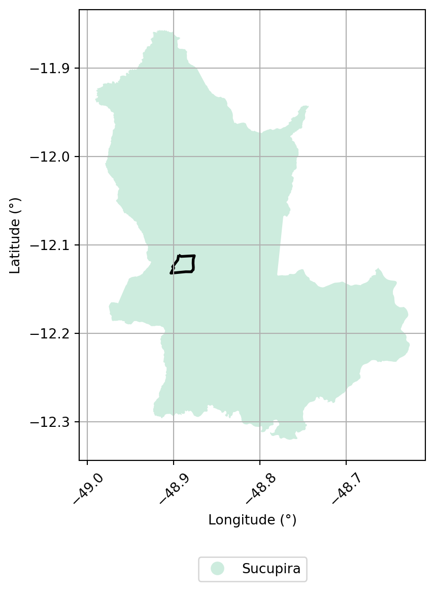
| Código da UF | Estado | UF | Código do Município | Nome do Município |
|---|---|---|---|---|
| 17.0000 | Tocantins | TO | 1720853 | Sucupira |
77.1.2 Unidades de Conservação
Não há sobreposição
77.1.3 Terras Indígenas
Não há sobreposição
77.1.4 Projetos de Assentamento
Não há sobreposição
77.1.5 Território Quilombola
Não há sobreposição
77.1.6 SIGEF
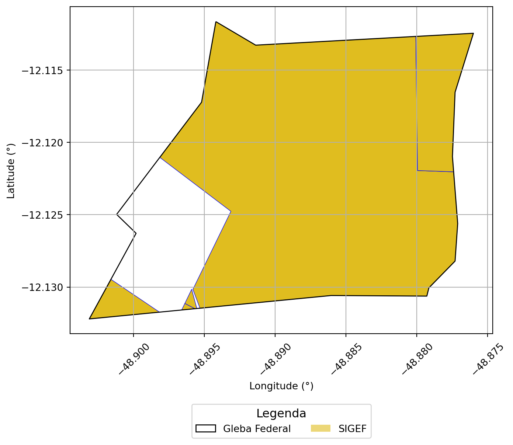
| Código SIGEF | Natureza do Polígono | Área Sobreposta (ha) |
|---|---|---|
| e43cffd3-b7ba-4329-8e00-fc69657bebd5 | Particular | 0.2471 |
| d28fa24e-affc-454a-85c4-f413395bb9e0 | Particular | 7.7807 |
| aefd2607-d690-4336-85ea-10834777cb66 | Particular | 358.2437 |
| 8f0ef72e-f0c4-49dd-992e-b8682b0bc9d9 | Particular | 0.6406 |
| e698e08c-25de-497f-ba79-79f28acef6f5 | Particular | 33.2410 |
77.1.7 SNCI
Não há sobreposição
77.2 Gleba Analisada: LOTES23,33,34,37E38,DOLOTºDUERÉ,3ªET.FLS.A-1
| Nome da Gleba | Área (ha) |
|---|---|
| LOTES23,33,34,37E38,DOLOTºDUERÉ,3ªET.FLS.A-1 | 651.9300 |
77.2.1 Abrangência Municipal
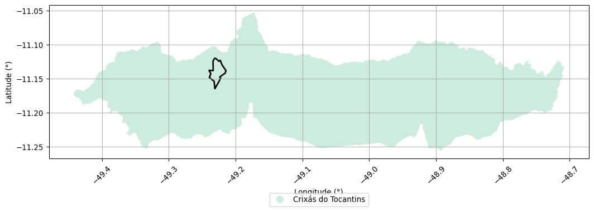
| Código da UF | Estado | UF | Código do Município | Nome do Município |
|---|---|---|---|---|
| 17.0000 | Tocantins | TO | 1706258 | Crixás do Tocantins |
77.2.2 Unidades de Conservação
Não há sobreposição
77.2.3 Terras Indígenas
Não há sobreposição
77.2.4 Projetos de Assentamento
Não há sobreposição
77.2.5 Território Quilombola
Não há sobreposição
77.2.6 SIGEF
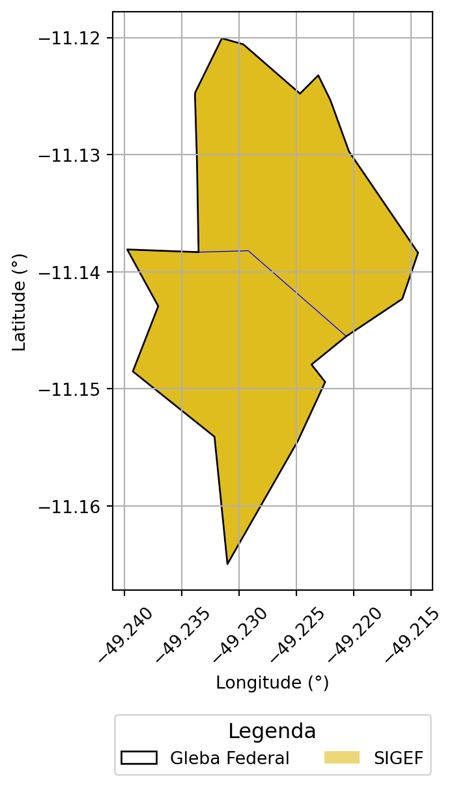
| Código SIGEF | Natureza do Polígono | Área Sobreposta (ha) |
|---|---|---|
| 1adb5304-cc3c-4998-8fd2-51664855ced0 | Gleba Pública | 654.1217 |
| b8d9388d-3dd8-4d27-8174-49ab8b1be03f | Particular | 0.0778 |
| 432651d6-7fae-4c20-96a5-0719a2b82926 | Particular | 347.3092 |
77.2.7 SNCI
Não há sobreposição
77.3 Gleba Analisada: LOTES23,33,34,37E38,DOLOTºDUERÉ,3ªET.FLS.A-1
| Nome da Gleba | Área (ha) |
|---|---|
| LOTES23,33,34,37E38,DOLOTºDUERÉ,3ªET.FLS.A-1 | 590.5295 |
77.3.1 Abrangência Municipal
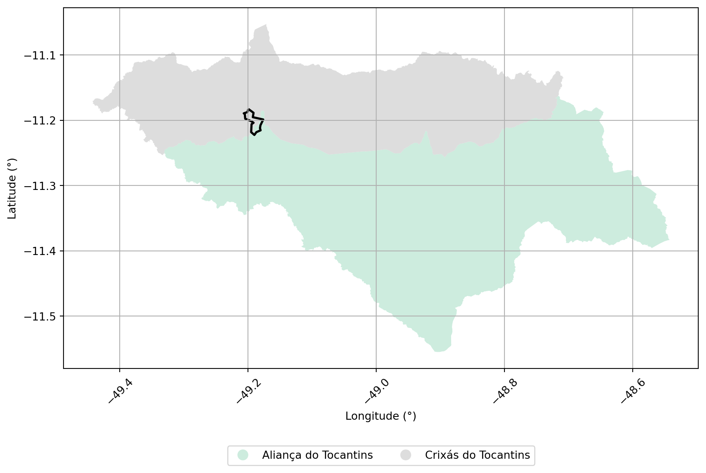
| Código da UF | Estado | UF | Código do Município | Nome do Município |
|---|---|---|---|---|
| 17.0000 | Tocantins | TO | 1700350 | Aliança do Tocantins |
| 17.0000 | Tocantins | TO | 1706258 | Crixás do Tocantins |
77.3.2 Unidades de Conservação
Não há sobreposição
77.3.3 Terras Indígenas
Não há sobreposição
77.3.4 Projetos de Assentamento
Não há sobreposição
77.3.5 Território Quilombola
Não há sobreposição
77.3.6 SIGEF
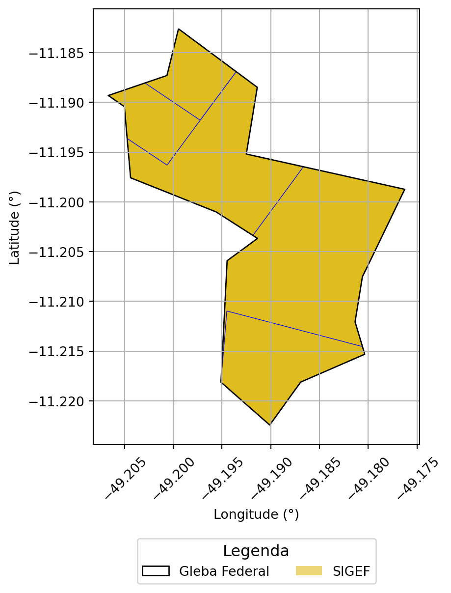
| Código SIGEF | Natureza do Polígono | Área Sobreposta (ha) |
|---|---|---|
| 0044a5a8-5169-4f47-b40f-59a08b77ba4c | Gleba Pública | 592.5424 |
| 64c26388-1c8e-4452-ba57-80502dec11e6 | Particular | 147.9706 |
| 021d6d5b-eeb8-4682-ad74-bac29179f25f | Particular | 104.1301 |
| 38a0c395-3346-4920-a63d-820e04e90827 | Particular | 47.6975 |
77.3.7 SNCI
Não há sobreposição
77.4 Gleba Analisada: LOTES23,33,34,37E38,DOLOTºDUERÉ,3ªET.FLS.A-1
| Nome da Gleba | Área (ha) |
|---|---|
| LOTES23,33,34,37E38,DOLOTºDUERÉ,3ªET.FLS.A-1 | 154.9713 |
77.4.1 Abrangência Municipal
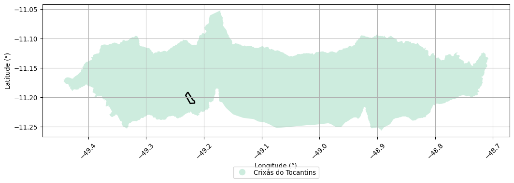
| Código da UF | Estado | UF | Código do Município | Nome do Município |
|---|---|---|---|---|
| 17.0000 | Tocantins | TO | 1706258 | Crixás do Tocantins |
77.4.2 Unidades de Conservação
Não há sobreposição
77.4.3 Terras Indígenas
Não há sobreposição
77.4.4 Projetos de Assentamento
Não há sobreposição
77.4.5 Território Quilombola
Não há sobreposição
77.4.6 SIGEF
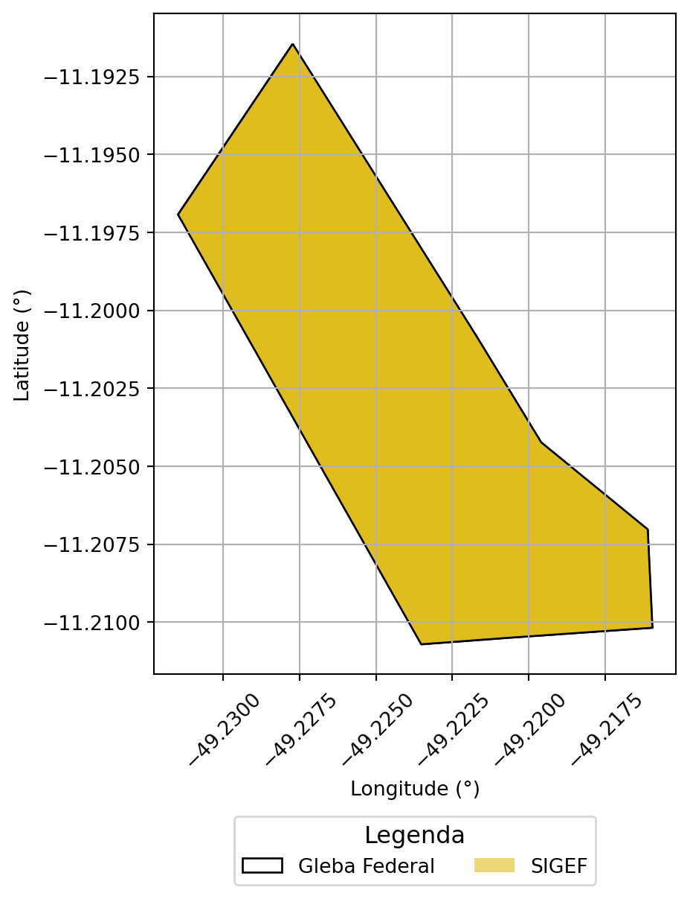
| Código SIGEF | Natureza do Polígono | Área Sobreposta (ha) |
|---|---|---|
| 4052d81f-8d6b-4121-bbfb-f65ceafc05c2 | Gleba Pública | 155.4921 |
77.4.7 SNCI
Não há sobreposição
77.5 Gleba Analisada: LOTES23E23/A,LOTEAMENTOTORIBERÓEBARREIROFLS2
| Nome da Gleba | Área (ha) |
|---|---|
| LOTES23E23/A,LOTEAMENTOTORIBERÓEBARREIROFLS2 | 1141.6645 |
77.5.1 Abrangência Municipal
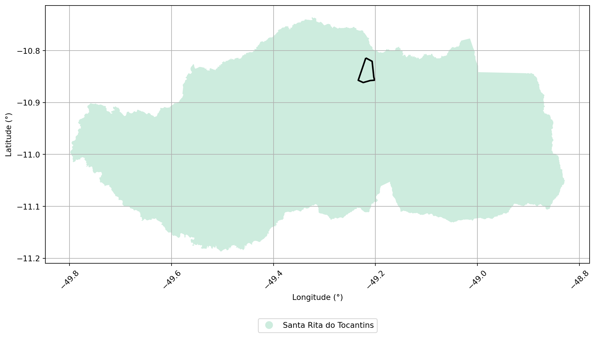
| Código da UF | Estado | UF | Código do Município | Nome do Município |
|---|---|---|---|---|
| 17.0000 | Tocantins | TO | 1718899 | Santa Rita do Tocantins |
77.5.2 Unidades de Conservação
Não há sobreposição
77.5.3 Terras Indígenas
Não há sobreposição
77.5.4 Projetos de Assentamento
Não há sobreposição
77.5.5 Território Quilombola
Não há sobreposição
77.5.6 SIGEF
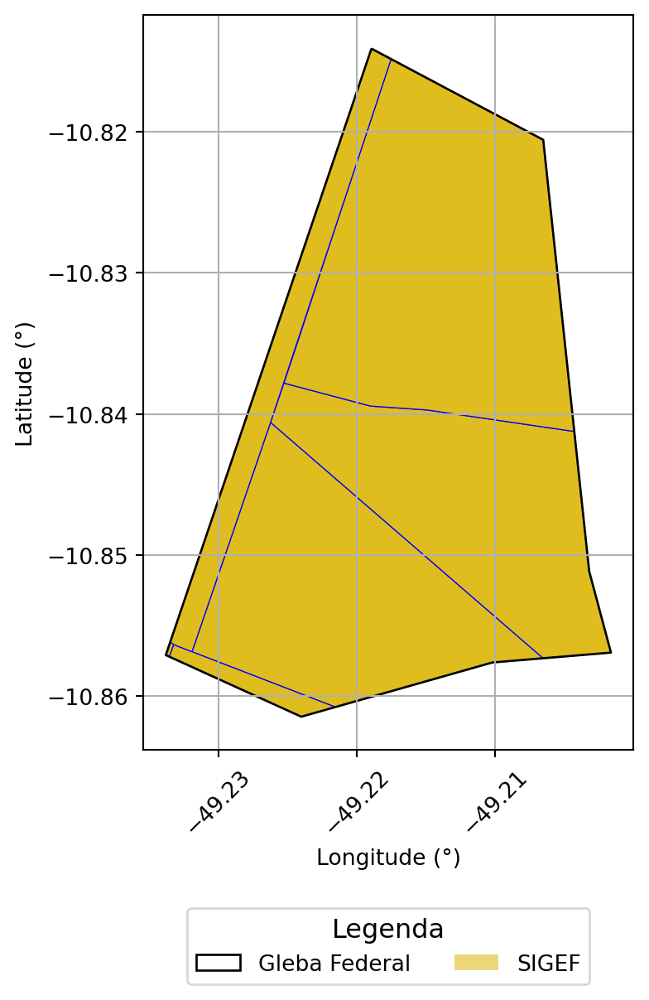
| Código SIGEF | Natureza do Polígono | Área Sobreposta (ha) |
|---|---|---|
| ac91d52c-e200-4935-840c-644a0d69cab6 | Particular | 304.1067 |
| 11744295-f20b-4c27-abf9-f63106677d2c | Particular | 287.9968 |
| 34a0136b-4c03-45e4-90cd-15355fe352fc | Particular | 17.1674 |
| bef5bd8b-1b2e-47dc-8dc6-4bd7b482aeaf | Particular | 443.9067 |
| c49df148-2b6a-443e-a71f-5d98801e1ba0 | Particular | 91.6824 |
| 398cf59e-06c2-4836-a199-41d316fdc42d | Particular | 0.3205 |
77.5.7 SNCI
Não há sobreposição
77.6 Gleba Analisada: LOTES28,LOTEAMENTOAGUABONITAFOLHA1
| Nome da Gleba | Área (ha) |
|---|---|
| LOTES28,LOTEAMENTOAGUABONITAFOLHA1 | 290.9783 |
77.6.1 Abrangência Municipal

| Código da UF | Estado | UF | Código do Município | Nome do Município |
|---|---|---|---|---|
| 17.0000 | Tocantins | TO | 1702000 | Araguaçu |
77.6.2 Unidades de Conservação
Não há sobreposição
77.6.3 Terras Indígenas
Não há sobreposição
77.6.4 Projetos de Assentamento
Não há sobreposição
77.6.5 Território Quilombola
Não há sobreposição
77.6.6 SIGEF

| Código SIGEF | Natureza do Polígono | Área Sobreposta (ha) |
|---|---|---|
| 04146191-a52c-4f07-b6ad-1cb9c19c54c3 | Particular | 291.7060 |
77.6.7 SNCI
Não há sobreposição
77.7 Gleba Analisada: LOTES28E52,LOT°PIUMERIODOCOCO1ªETAPA
| Nome da Gleba | Área (ha) |
|---|---|
| LOTES28E52,LOT°PIUMERIODOCOCO1ªETAPA | 613.4567 |
77.7.1 Abrangência Municipal
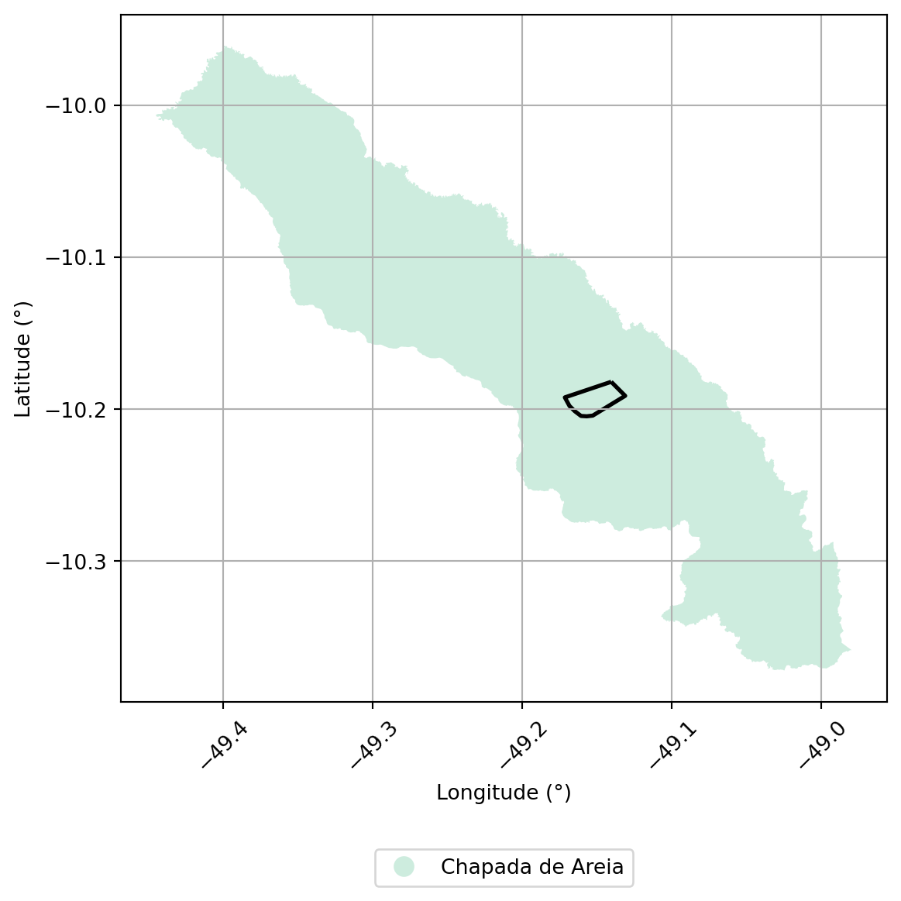
| Código da UF | Estado | UF | Código do Município | Nome do Município |
|---|---|---|---|---|
| 17.0000 | Tocantins | TO | 1704600 | Chapada de Areia |
77.7.2 Unidades de Conservação
Não há sobreposição
77.7.3 Terras Indígenas
Não há sobreposição
77.7.4 Projetos de Assentamento
Não há sobreposição
77.7.5 Território Quilombola
Não há sobreposição
77.7.6 SIGEF
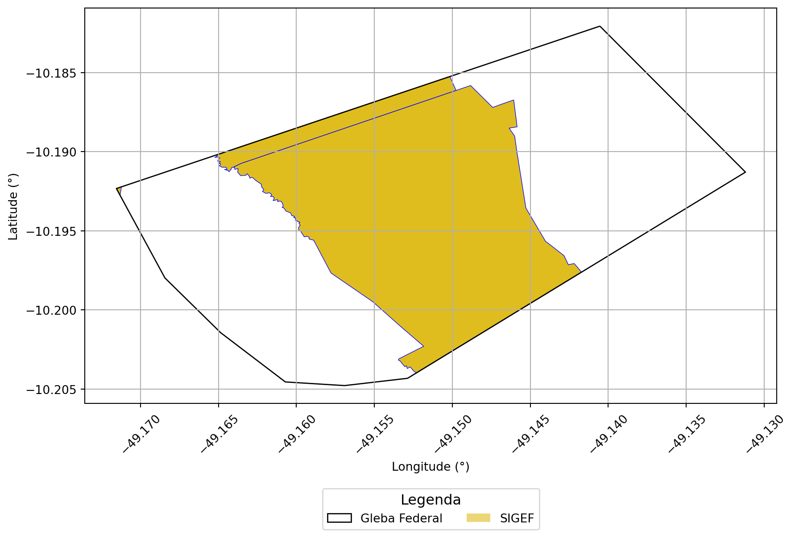
| Código SIGEF | Natureza do Polígono | Área Sobreposta (ha) |
|---|---|---|
| ad6b17a7-a609-4407-83b7-d0ae0b75c678 | Particular | 0.1000 |
| d33fcfa1-cc95-48cd-84f7-9cce564030e9 | Particular | 19.0050 |
| 88ecb3c6-cb3f-4f35-9b57-d045d3be8354 | Particular | 247.1349 |
77.7.7 SNCI
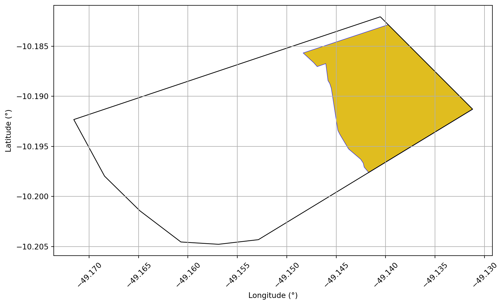
| Código SNCI | Área Sobreposta (ha) |
|---|---|
| 261301000085-34 | 159.1622 |
77.8 Gleba Analisada: LOTES28E52,LOT°PIUMERIODOCOCO1ªETAPA
| Nome da Gleba | Área (ha) |
|---|---|
| LOTES28E52,LOT°PIUMERIODOCOCO1ªETAPA | 481.1211 |
77.8.1 Abrangência Municipal
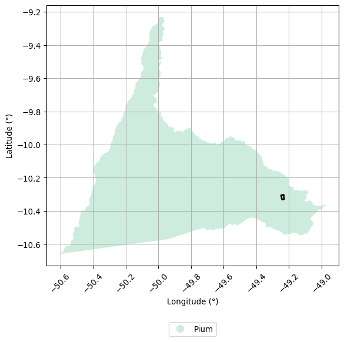
| Código da UF | Estado | UF | Código do Município | Nome do Município |
|---|---|---|---|---|
| 17.0000 | Tocantins | TO | 1717503 | Pium |
77.8.2 Unidades de Conservação
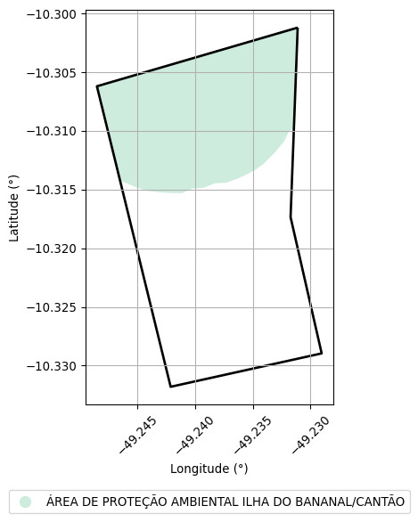
| Nome | Categoria | Responsabilidade | Área Sobreposta (ha) |
|---|---|---|---|
| ÁREA DE PROTEÇÃO AMBIENTAL ILHA DO BANANAL/CANTÃO | Área de Proteção Ambiental | estadual | 199.9145 |
77.8.3 Terras Indígenas
Não há sobreposição
77.8.4 Projetos de Assentamento
Não há sobreposição
77.8.5 Território Quilombola
Não há sobreposição
77.8.6 SIGEF
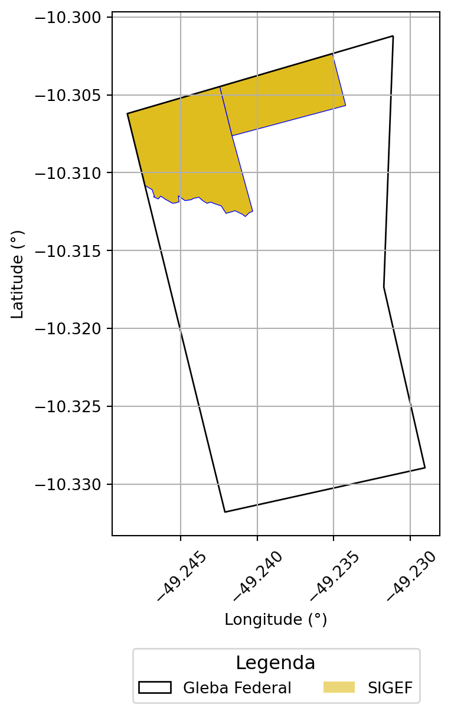
| Código SIGEF | Natureza do Polígono | Área Sobreposta (ha) |
|---|---|---|
| c4b2019b-d9bd-4ce9-ae2a-f652d38f9985 | Particular | 52.5885 |
| 5da18989-5141-4640-bfa7-1f18066f183a | Particular | 31.2347 |
77.8.7 SNCI
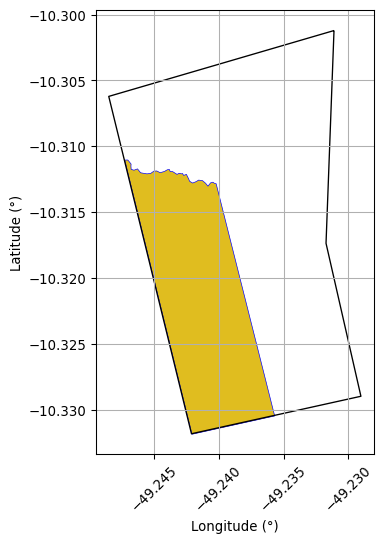
| Código SNCI | Área Sobreposta (ha) |
|---|---|
| 261404000008-62 | 153.8406 |
77.9 Gleba Analisada: LOTES30,31E34,LOT°ARAGUACEMA20ªETAPA
| Nome da Gleba | Área (ha) |
|---|---|
| LOTES30,31E34,LOT°ARAGUACEMA20ªETAPA | 473.5630 |
77.9.1 Abrangência Municipal

| Código da UF | Estado | UF | Código do Município | Nome do Município |
|---|---|---|---|---|
| 17.0000 | Tocantins | TO | 1707207 | Dois Irmãos do Tocantins |
77.9.2 Unidades de Conservação
Não há sobreposição
77.9.3 Terras Indígenas
Não há sobreposição
77.9.4 Projetos de Assentamento
Não há sobreposição
77.9.5 Território Quilombola
Não há sobreposição
77.9.6 SIGEF
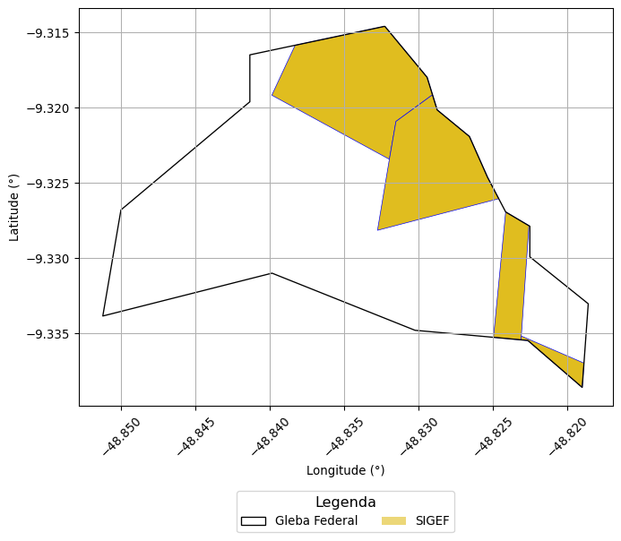
| Código SIGEF | Natureza do Polígono | Área Sobreposta (ha) |
|---|---|---|
| a088bd3a-eb1e-427a-9725-68d553b45502 | Particular | 4.1830 |
| 7a6b47d9-8d49-46e2-92d5-4d0a56453a34 | Particular | 67.2418 |
| b18f14c7-1c2a-43db-b6b9-7edc5425bd45 | Particular | 17.0383 |
| 94367700-9779-4dce-b22f-4daf07f5f082 | Particular | 51.3435 |
77.9.7 SNCI
Não há sobreposição
77.10 Gleba Analisada: LOTES34,LOT°JACU
| Nome da Gleba | Área (ha) |
|---|---|
| LOTES34,LOT°JACU | 565.3083 |
77.10.1 Abrangência Municipal
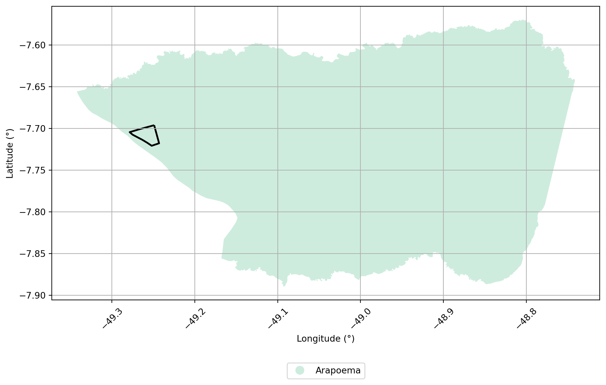
| Código da UF | Estado | UF | Código do Município | Nome do Município |
|---|---|---|---|---|
| 17.0000 | Tocantins | TO | 1702307 | Arapoema |
77.10.2 Unidades de Conservação
Não há sobreposição
77.10.3 Terras Indígenas
Não há sobreposição
77.10.4 Projetos de Assentamento
Não há sobreposição
77.10.5 Território Quilombola
Não há sobreposição
77.10.6 SIGEF
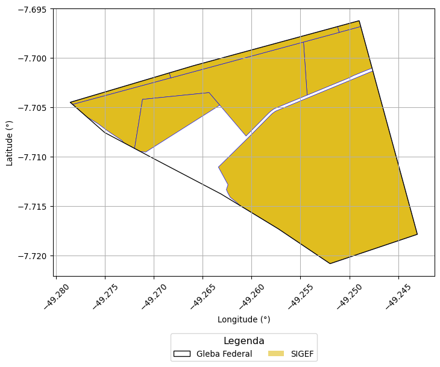
| Código SIGEF | Natureza do Polígono | Área Sobreposta (ha) |
|---|---|---|
| 8af33de0-a622-4e26-adaa-3c58bdd33d2d | Particular | 35.2266 |
| 64976817-2ba7-48b2-82c0-81ede3c43111 | Particular | 5.1644 |
| 51e7ffcf-9515-4c0a-9ee1-7df58891f725 | Particular | 13.0723 |
| 235db3bd-2a65-4c95-be1d-f11d8309ef1c | Particular | 295.8395 |
| d3905962-1a89-47f6-992c-c214ce248663 | Particular | 1.7334 |
| 79f604af-8e53-4270-a7cc-f40f6c9c5743 | Particular | 116.0192 |
| 20dd126c-d331-44eb-822a-5aec20988bbc | Particular | 38.7234 |
77.10.7 SNCI
Não há sobreposição
77.11 Gleba Analisada: LOTES34,LOT°TOCANTINSESANTATEREZA-TERRENOARAPOÁ
| Nome da Gleba | Área (ha) |
|---|---|
| LOTES34,LOT°TOCANTINSESANTATEREZA-TERRENOARAPOÁ | 620.8907 |
77.11.1 Abrangência Municipal
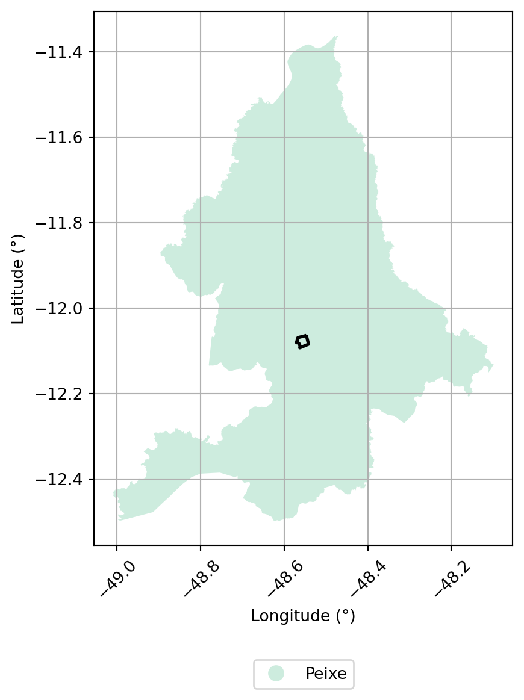
| Código da UF | Estado | UF | Código do Município | Nome do Município |
|---|---|---|---|---|
| 17.0000 | Tocantins | TO | 1716604 | Peixe |
77.11.2 Unidades de Conservação
Não há sobreposição
77.11.3 Terras Indígenas
Não há sobreposição
77.11.4 Projetos de Assentamento
Não há sobreposição
77.11.5 Território Quilombola
Não há sobreposição
77.11.6 SIGEF
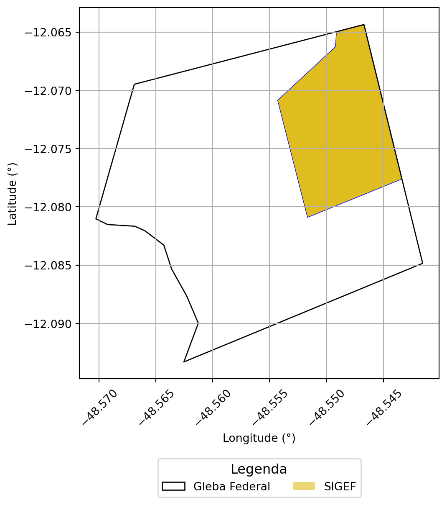
| Código SIGEF | Natureza do Polígono | Área Sobreposta (ha) |
|---|---|---|
| 90063ff2-0efa-49b3-86e3-46463803fa36 | Particular | 132.7945 |
77.11.7 SNCI
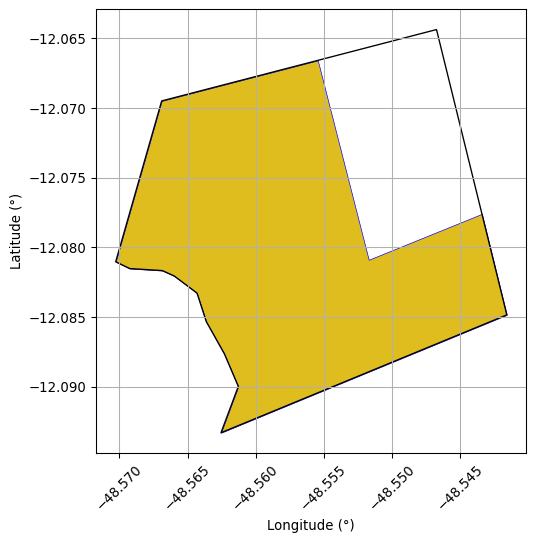
| Código SNCI | Área Sobreposta (ha) |
|---|---|
| 261304000148-31 | 469.8449 |
77.12 Gleba Analisada: LOTES34E35,LOTºSANTALUZIAFLSA
| Nome da Gleba | Área (ha) |
|---|---|
| LOTES34E35,LOTºSANTALUZIAFLSA | 322.7037 |
77.12.1 Abrangência Municipal
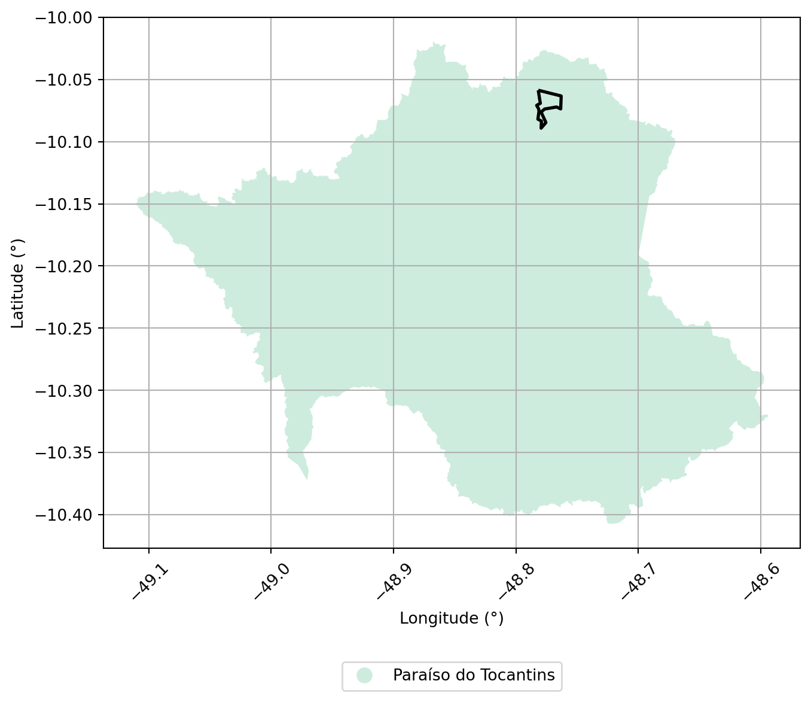
| Código da UF | Estado | UF | Código do Município | Nome do Município |
|---|---|---|---|---|
| 17.0000 | Tocantins | TO | 1716109 | Paraíso do Tocantins |
77.12.2 Unidades de Conservação
Não há sobreposição
77.12.3 Terras Indígenas
Não há sobreposição
77.12.4 Projetos de Assentamento
Não há sobreposição
77.12.5 Território Quilombola
Não há sobreposição
77.12.6 SIGEF
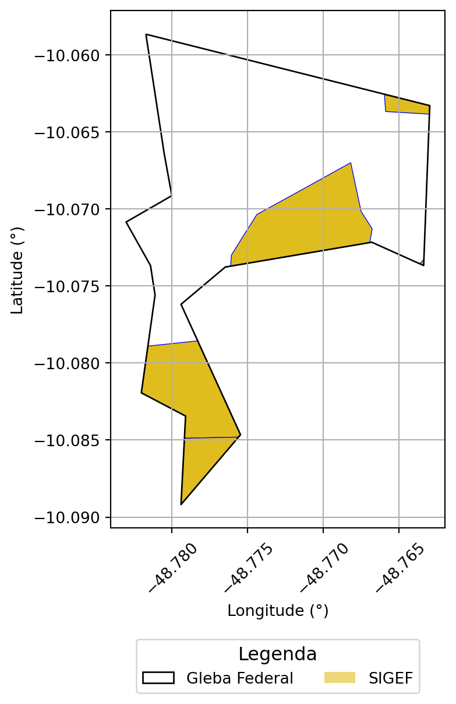
| Código SIGEF | Natureza do Polígono | Área Sobreposta (ha) |
|---|---|---|
| 7bbb8b1f-21bb-4b5b-b227-e5721b071481 | Particular | 0.0631 |
| 5cf4198c-7ba6-4899-91f3-2aeee984b778 | Particular | 40.1168 |
| 0732da06-e2bc-4ecb-bf83-bcb648f62cff | Particular | 9.3328 |
| e6c97654-a163-47a3-af27-bf950be3bf61 | Particular | 30.2959 |
| 7bf4400f-760b-4559-a3ec-d83ef6f947a1 | Particular | 2.9873 |
77.12.7 SNCI
Não há sobreposição
77.13 Gleba Analisada: LOTES35E36,LOT°TOCANTINSESANTATEREZA-TERRENOPORTEI
| Nome da Gleba | Área (ha) |
|---|---|
| LOTES35E36,LOT°TOCANTINSESANTATEREZA-TERRENOPORTEI | 54.9758 |
77.13.1 Abrangência Municipal
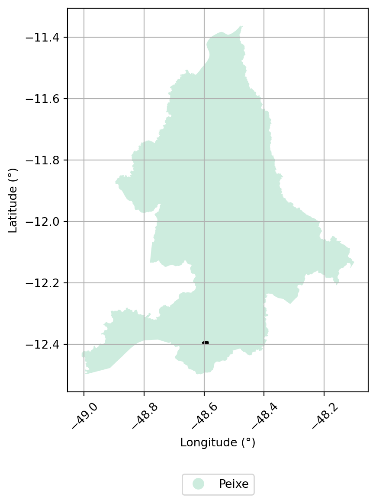
| Código da UF | Estado | UF | Código do Município | Nome do Município |
|---|---|---|---|---|
| 17.0000 | Tocantins | TO | 1716604 | Peixe |
77.13.2 Unidades de Conservação
Não há sobreposição
77.13.3 Terras Indígenas
Não há sobreposição
77.13.4 Projetos de Assentamento
Não há sobreposição
77.13.5 Território Quilombola
Não há sobreposição
77.13.6 SIGEF
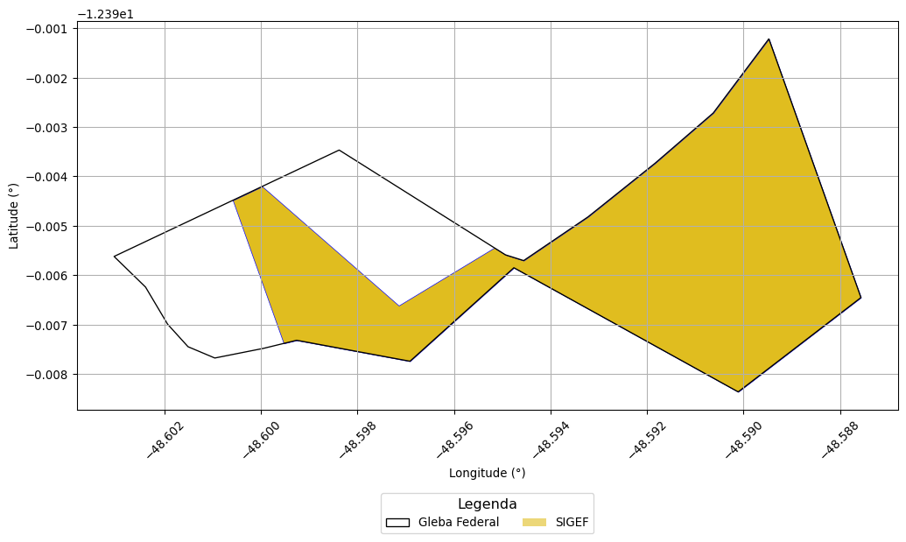
| Código SIGEF | Natureza do Polígono | Área Sobreposta (ha) |
|---|---|---|
| 3940d465-51df-4851-a08e-c33059154ffb | Particular | 39.4958 |
77.13.7 SNCI
Não há sobreposição
77.14 Gleba Analisada: LOTES36,07E28,LOT°PÉDOMORRO
| Nome da Gleba | Área (ha) |
|---|---|
| LOTES36,07E28,LOT°PÉDOMORRO | 1816.0238 |
77.14.1 Abrangência Municipal
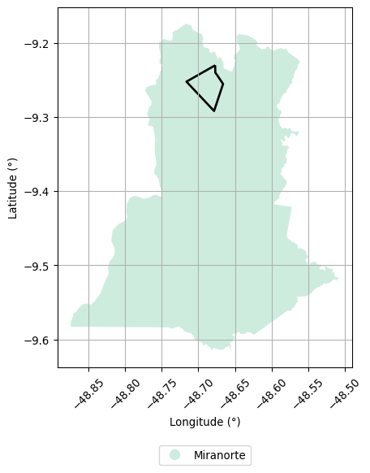
| Código da UF | Estado | UF | Código do Município | Nome do Município |
|---|---|---|---|---|
| 17.0000 | Tocantins | TO | 1713304 | Miranorte |
77.14.2 Unidades de Conservação
Não há sobreposição
77.14.3 Terras Indígenas
Não há sobreposição
77.14.4 Projetos de Assentamento
Não há sobreposição
77.14.5 Território Quilombola
Não há sobreposição
77.14.6 SIGEF
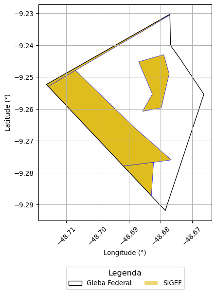
| Código SIGEF | Natureza do Polígono | Área Sobreposta (ha) |
|---|---|---|
| e62c9806-8ce0-43a5-b1f4-51291f0adf85 | Particular | 28.6796 |
| 92323099-39bf-4dfe-973b-6ce62f66e632 | Particular | 124.7713 |
| d29146ee-ae49-44d9-b21e-6ee1d7ef88c3 | Particular | 60.9911 |
| 92a277a8-2ec7-43eb-a1cb-4bf5726db9a1 | Particular | 491.6444 |
77.14.7 SNCI
Não há sobreposição
77.15 Gleba Analisada: LOTES36,07E28,LOT°PÉDOMORRO
| Nome da Gleba | Área (ha) |
|---|---|
| LOTES36,07E28,LOT°PÉDOMORRO | 231.5848 |
77.15.1 Abrangência Municipal
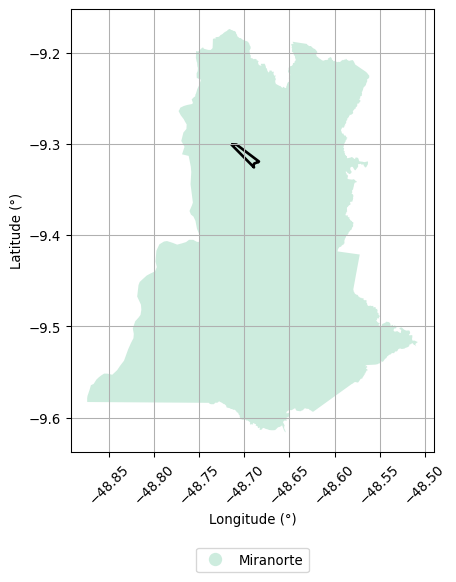
| Código da UF | Estado | UF | Código do Município | Nome do Município |
|---|---|---|---|---|
| 17.0000 | Tocantins | TO | 1713304 | Miranorte |
77.15.2 Unidades de Conservação
Não há sobreposição
77.15.3 Terras Indígenas
Não há sobreposição
77.15.4 Projetos de Assentamento
Não há sobreposição
77.15.5 Território Quilombola
Não há sobreposição
77.15.6 SIGEF
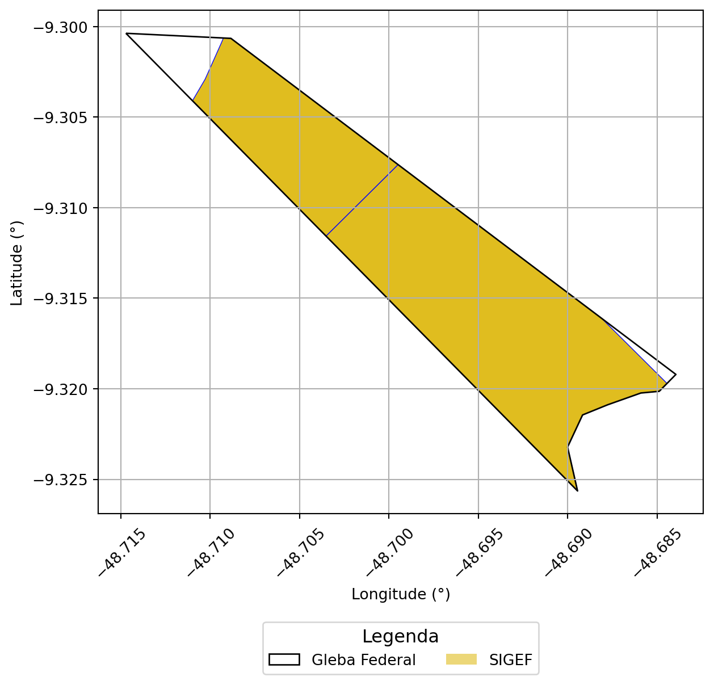
| Código SIGEF | Natureza do Polígono | Área Sobreposta (ha) |
|---|---|---|
| ddf98a5f-b580-4271-b842-a67b98fee0dc | Particular | 152.4476 |
| 9a6232f5-d6c8-4c29-934b-d40eb13cd039 | Particular | 65.8420 |
77.15.7 SNCI
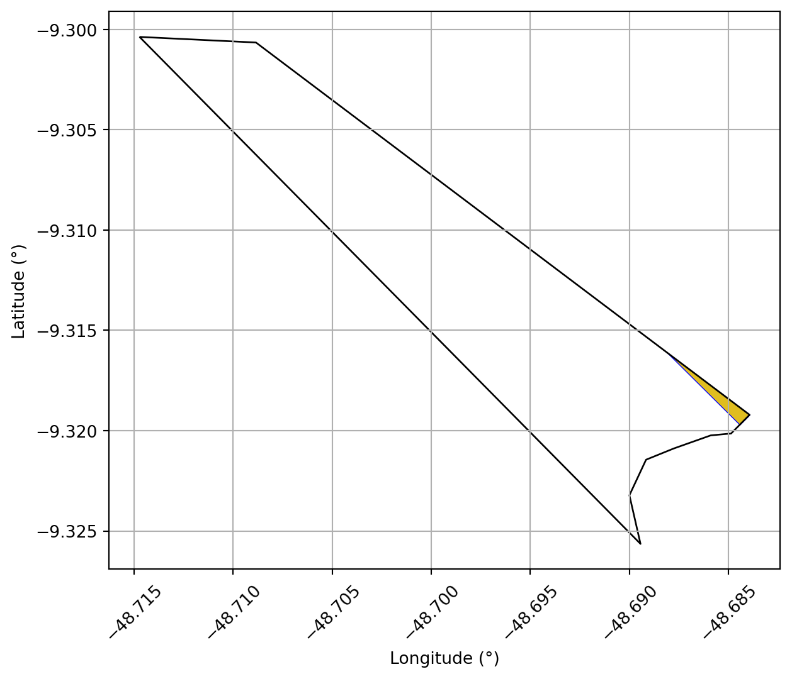
| Código SNCI | Área Sobreposta (ha) |
|---|---|
| 261301000078-05 | 2.1990 |
77.16 Gleba Analisada: LOTES36,07E28,LOT°PÉDOMORRO
| Nome da Gleba | Área (ha) |
|---|---|
| LOTES36,07E28,LOT°PÉDOMORRO | 1444.2179 |
77.16.1 Abrangência Municipal
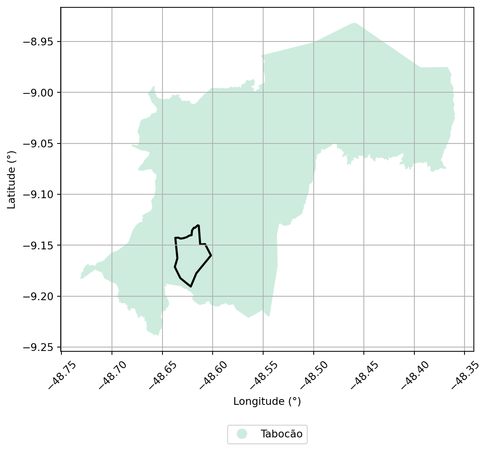
| Código da UF | Estado | UF | Código do Município | Nome do Município |
|---|---|---|---|---|
| 17.0000 | Tocantins | TO | 1708254 | Tabocão |
77.16.2 Unidades de Conservação
Não há sobreposição
77.16.3 Terras Indígenas
Não há sobreposição
77.16.4 Projetos de Assentamento
Não há sobreposição
77.16.5 Território Quilombola
Não há sobreposição
77.16.6 SIGEF
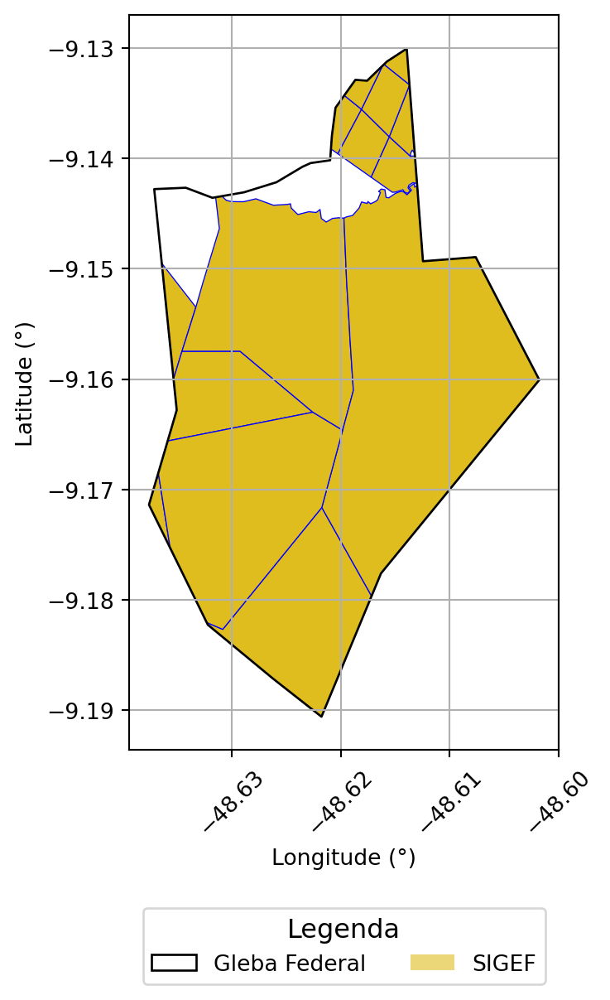
| Código SIGEF | Natureza do Polígono | Área Sobreposta (ha) |
|---|---|---|
| 32786fda-e18c-4b1b-8516-3173ca1de476 | Particular | 17.3676 |
| 47b459a1-602f-4cf0-b30f-de1fe03264cb | Particular | 16.0592 |
| 22df6209-7247-449b-ae56-e1dcd1044563 | Particular | 18.6212 |
| 951d3248-ead1-4b70-9a9b-599d21a82718 | Particular | 9.0091 |
| c412684c-9c8b-44e9-8369-6ae9597efdde | Particular | 9.3800 |
| 67defc72-0b76-4c62-acd7-8b24ab965b37 | Particular | 18.5267 |
| 7f46e450-caa1-439c-abc8-a29ed518b7a9 | Particular | 168.8382 |
| dc951c48-5cd4-4f7c-9fbd-8071bc988547 | Particular | 260.0963 |
| 18f3d357-b681-4a76-8b98-27ac0b6ddbcd | Particular | 481.8467 |
| fb4f184e-eb80-4433-8f2a-8d8147781c9f | Particular | 81.8284 |
| 76d664e6-8d44-4840-9acd-7b8e315571f2 | Particular | 252.1320 |
| 973b192a-0afe-432a-a63a-d96bd2ed63d3 | Particular | 4.4893 |
| d287a3c8-9d6e-4133-bed5-03558037a430 | Particular | 5.6988 |
77.16.7 SNCI
Não há sobreposição
77.17 Gleba Analisada: LOTES36,37E38-LOT°TOCANTINSESANTATEREZA-TERRENOARA
| Nome da Gleba | Área (ha) |
|---|---|
| LOTES36,37E38-LOT°TOCANTINSESANTATEREZA-TERRENOARA | 128.1573 |
77.17.1 Abrangência Municipal
| Código da UF | Estado | UF | Código do Município | Nome do Município |
|---|---|---|---|---|
| 17.0000 | Tocantins | TO | 1716604 | Peixe |
77.17.2 Unidades de Conservação
Não há sobreposição
77.17.3 Terras Indígenas
Não há sobreposição
77.17.4 Projetos de Assentamento
Não há sobreposição
77.17.5 Território Quilombola
Não há sobreposição
77.17.6 SIGEF
Não há sobreposição
77.17.7 SNCI
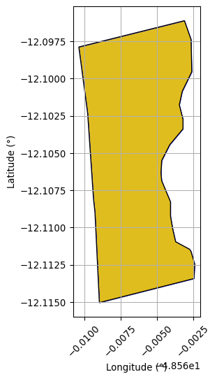
| Código SNCI | Área Sobreposta (ha) |
|---|---|
| 261304000148-31 | 128.7118 |
77.18 Gleba Analisada: LOTES38,55E56,LOT°ARAGUACEMA21ªETAPA
| Nome da Gleba | Área (ha) |
|---|---|
| LOTES38,55E56,LOT°ARAGUACEMA21ªETAPA | 44.6664 |
77.18.1 Abrangência Municipal
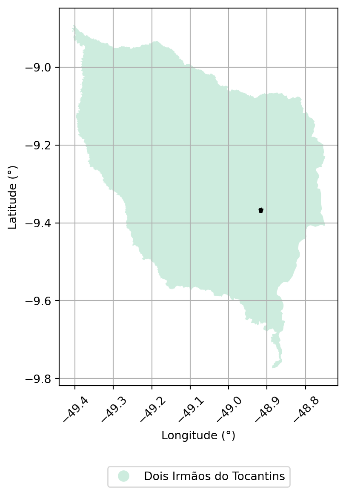
| Código da UF | Estado | UF | Código do Município | Nome do Município |
|---|---|---|---|---|
| 17.0000 | Tocantins | TO | 1707207 | Dois Irmãos do Tocantins |
77.18.2 Unidades de Conservação
Não há sobreposição
77.18.3 Terras Indígenas
Não há sobreposição
77.18.4 Projetos de Assentamento
Não há sobreposição
77.18.5 Território Quilombola
Não há sobreposição
77.18.6 SIGEF
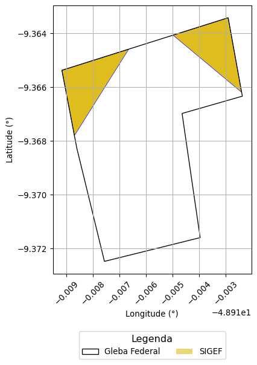
| Código SIGEF | Natureza do Polígono | Área Sobreposta (ha) |
|---|---|---|
| 8a70d242-b8b5-4ff9-a1a6-28e8eaef39c1 | Particular | 3.9684 |
| 3130989d-3a52-4484-89ad-3b1a94ded2b8 | Particular | 3.7250 |
77.18.7 SNCI
Não há sobreposição
77.19 Gleba Analisada: LOTES38,55E56,LOT°ARAGUACEMA21ªETAPA
| Nome da Gleba | Área (ha) |
|---|---|
| LOTES38,55E56,LOT°ARAGUACEMA21ªETAPA | 196.4592 |
77.19.1 Abrangência Municipal
| Código da UF | Estado | UF | Código do Município | Nome do Município |
|---|---|---|---|---|
| 17.0000 | Tocantins | TO | 1707207 | Dois Irmãos do Tocantins |
77.19.2 Unidades de Conservação
Não há sobreposição
77.19.3 Terras Indígenas
Não há sobreposição
77.19.4 Projetos de Assentamento
Não há sobreposição
77.19.5 Território Quilombola
Não há sobreposição
77.19.6 SIGEF
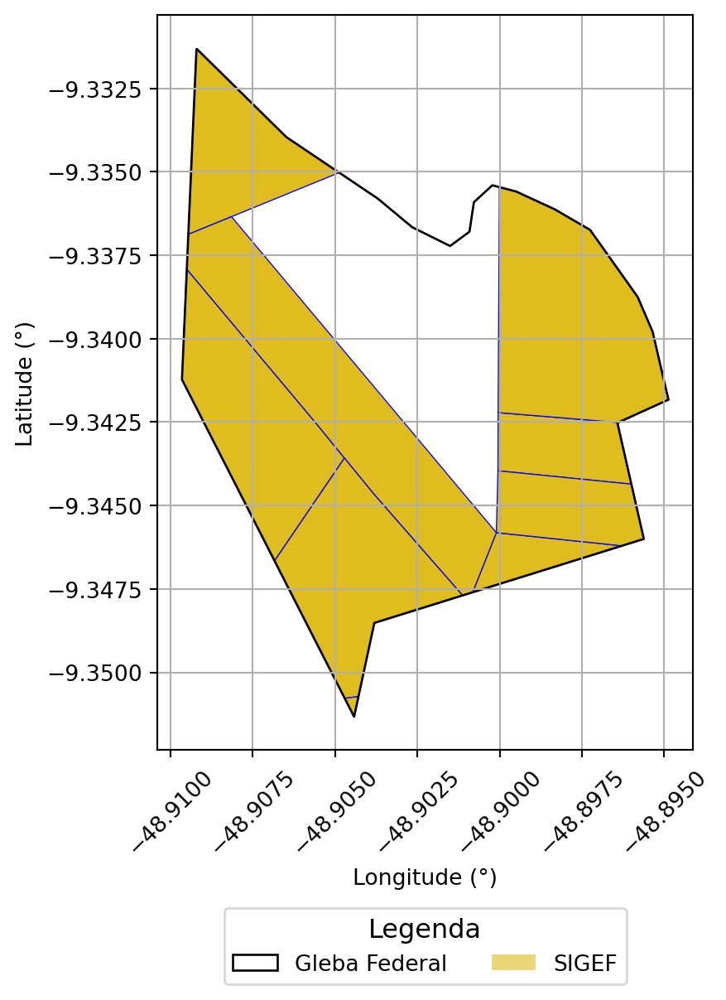
| Código SIGEF | Natureza do Polígono | Área Sobreposta (ha) |
|---|---|---|
| 5dcae0c9-0732-47b6-9663-e4f742e8039a | Particular | 0.1499 |
| 42d7fdcd-5ec6-49ca-b488-c83f7f8b003d | Particular | 22.2752 |
| 9f213c52-cb04-4073-9e6e-7c11a182a96e | Particular | 22.5705 |
| 31bc5134-88d3-4146-9e87-e576767b185f | Particular | 32.8451 |
| e14b491f-d924-422b-ad58-6e1dcee0d09a | Particular | 9.6864 |
| eb076a42-a155-4167-9e8c-a5df8e1e23e9 | Particular | 8.3252 |
| 061c6a80-8441-4796-af9b-93c651779292 | Particular | 31.9179 |
| 48e77701-7d78-4f24-93d9-2acd321b9cf7 | Particular | 14.4665 |
| ee7e1e63-5a75-41e0-aaa6-1f11982afa24 | Particular | 4.3297 |
77.19.7 SNCI
Não há sobreposição
77.20 Gleba Analisada: LOTES40,40AE40B,LOT°BOAESPERANÇAFLB
| Nome da Gleba | Área (ha) |
|---|---|
| LOTES40,40AE40B,LOT°BOAESPERANÇAFLB | 1723.1504 |
77.20.1 Abrangência Municipal
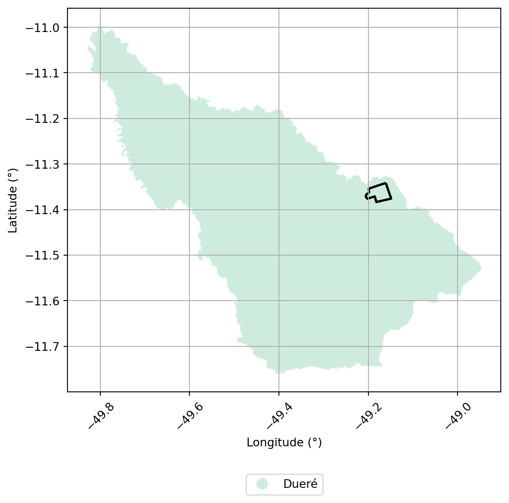
| Código da UF | Estado | UF | Código do Município | Nome do Município |
|---|---|---|---|---|
| 17.0000 | Tocantins | TO | 1707306 | Dueré |
77.20.2 Unidades de Conservação
Não há sobreposição
77.20.3 Terras Indígenas
Não há sobreposição
77.20.4 Projetos de Assentamento
Não há sobreposição
77.20.5 Território Quilombola
Não há sobreposição
77.20.6 SIGEF
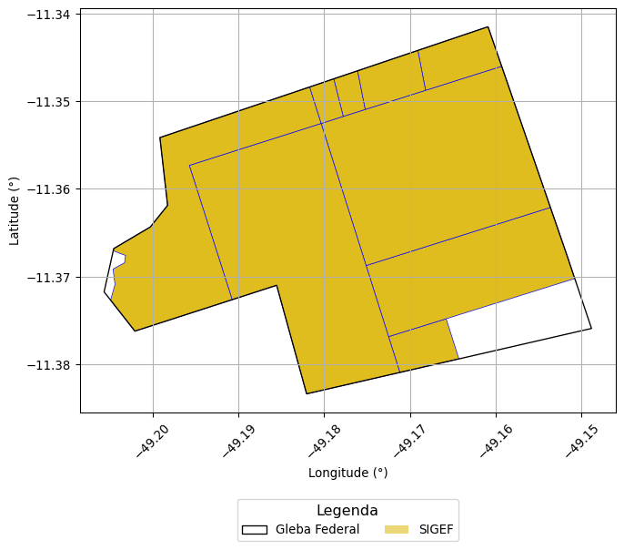
| Código SIGEF | Natureza do Polígono | Área Sobreposta (ha) |
|---|---|---|
| 76e6216e-c3ba-4b1d-a479-6b19ceffe7b3 | Particular | 277.1963 |
| 110aaf1d-11a9-409f-a047-1f6d025edb5b | Particular | 15.0334 |
| f21a1f06-2b1f-4e90-b5a9-464547024a5b | Particular | 15.1272 |
| f85be2e7-5411-4f11-819a-c28e9ad60bbd | Particular | 40.5816 |
| 77611f64-06bb-4c36-baa9-22b893985955 | Particular | 50.9078 |
| 6544d816-f1de-49a9-bfcf-f23979690e68 | Particular | 835.5467 |
| 2d3e3741-221d-4ba9-9f70-3af5e1a93957 | Particular | 488.3354 |
77.20.7 SNCI
Não há sobreposição
77.21 Gleba Analisada: LOTES43E45,LOT°TOCANTINSESTªTEREZA-TERRENOPORTEIRA
| Nome da Gleba | Área (ha) |
|---|---|
| LOTES43E45,LOT°TOCANTINSESTªTEREZA-TERRENOPORTEIRA | 108.2900 |
77.21.1 Abrangência Municipal
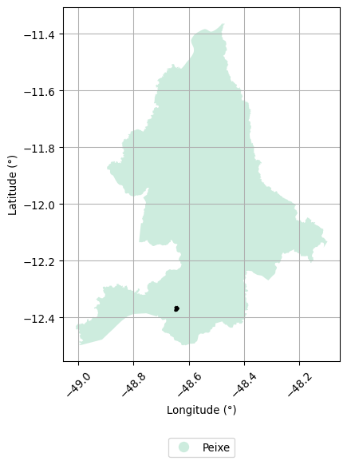
| Código da UF | Estado | UF | Código do Município | Nome do Município |
|---|---|---|---|---|
| 17.0000 | Tocantins | TO | 1716604 | Peixe |
77.21.2 Unidades de Conservação
Não há sobreposição
77.21.3 Terras Indígenas
Não há sobreposição
77.21.4 Projetos de Assentamento
Não há sobreposição
77.21.5 Território Quilombola
Não há sobreposição
77.21.6 SIGEF

| Código SIGEF | Natureza do Polígono | Área Sobreposta (ha) |
|---|---|---|
| a03af8ec-6256-4b4c-bbde-9043e8547400 | Particular | 43.8579 |
77.21.7 SNCI
Não há sobreposição
77.22 Gleba Analisada: LOTES50,51E52,LOT°AGUABONITAFOLHA1
| Nome da Gleba | Área (ha) |
|---|---|
| LOTES50,51E52,LOT°AGUABONITAFOLHA1 | 2823.0108 |
77.22.1 Abrangência Municipal
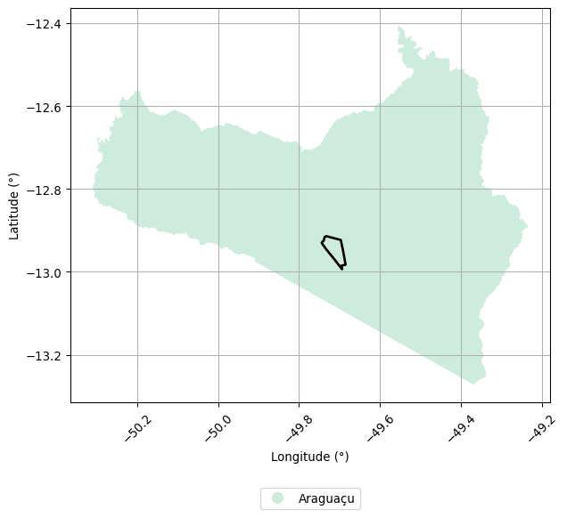
| Código da UF | Estado | UF | Código do Município | Nome do Município |
|---|---|---|---|---|
| 17.0000 | Tocantins | TO | 1702000 | Araguaçu |
77.22.2 Unidades de Conservação
Não há sobreposição
77.22.3 Terras Indígenas
Não há sobreposição
77.22.4 Projetos de Assentamento
Não há sobreposição
77.22.5 Território Quilombola
Não há sobreposição
77.22.6 SIGEF
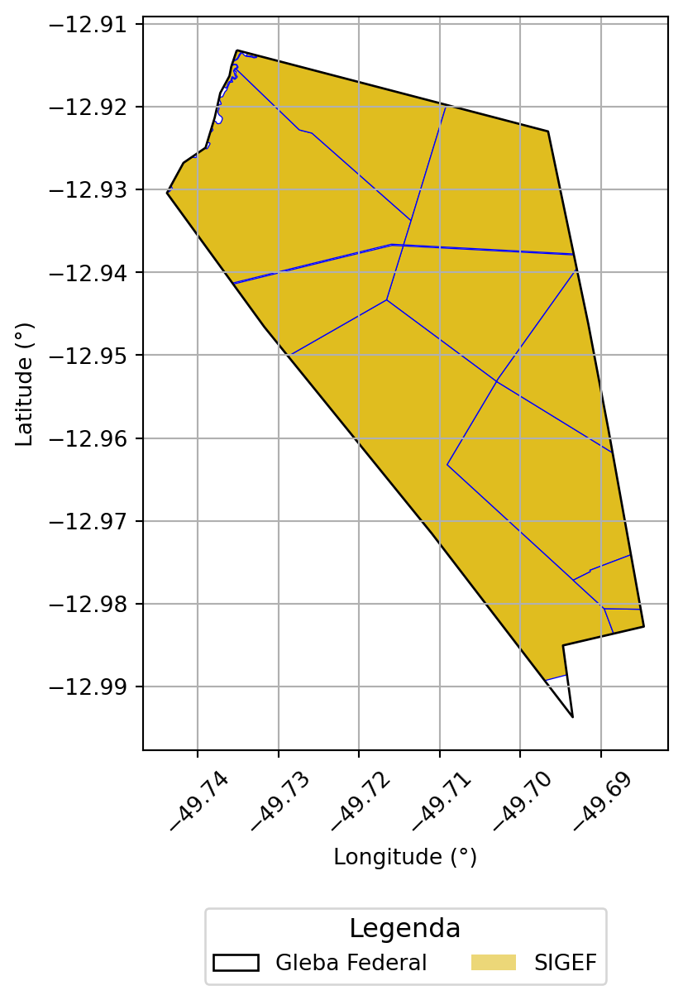
| Código SIGEF | Natureza do Polígono | Área Sobreposta (ha) |
|---|---|---|
| a1108176-26b3-468c-bbd8-227ae2cd1e59 | Particular | 689.5256 |
| 11d61d17-57ca-4bb0-be1c-b0bcf4a7ec7d | Particular | 13.0743 |
| 4cfb2005-1b8b-49b6-a16b-de9201baaa68 | Particular | 360.6430 |
| e624f714-44f6-4d57-b149-04dcf2cc6a92 | Particular | 171.2367 |
| d4bc3c6e-1ffd-45f0-a63f-f1ae22ac2751 | Particular | 174.5444 |
| 5fa1004c-08a2-462f-9164-eb4584836a14 | Particular | 279.0733 |
| 5fc94ee1-6fe3-4d6e-8afa-17f1976a714b | Particular | 40.8932 |
| 544e3c2c-7dcf-44ab-9428-23e63f99de50 | Particular | 487.4571 |
| 04bbee99-1cf2-40e7-9da1-d570b6540b22 | Particular | 323.8278 |
| 61333ca2-4d42-4196-84d0-117c42b847af | Particular | 267.8751 |
| 7add856b-a6ad-45b6-92a0-38fc06180338 | Particular | 2.7102 |
77.22.7 SNCI
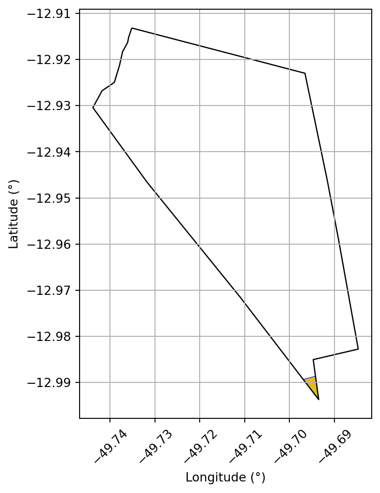
| Código SNCI | Área Sobreposta (ha) |
|---|---|
| 261112000027-44 | 8.7907 |
77.23 Gleba Analisada: LOTES54,LOT°TABOCAO3ªETAPA
| Nome da Gleba | Área (ha) |
|---|---|
| LOTES54,LOT°TABOCAO3ªETAPA | 62.9473 |
77.23.1 Abrangência Municipal
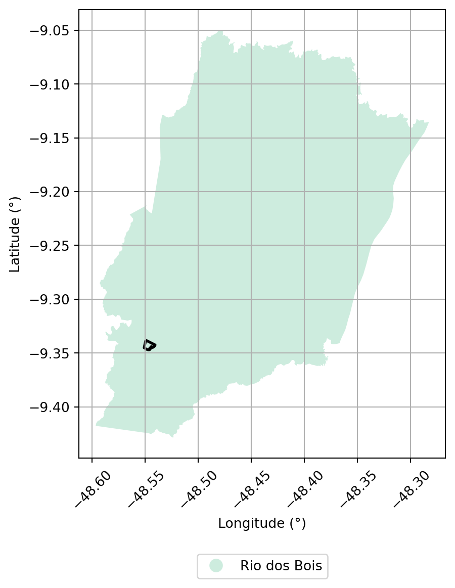
| Código da UF | Estado | UF | Código do Município | Nome do Município |
|---|---|---|---|---|
| 17.0000 | Tocantins | TO | 1718709 | Rio dos Bois |
77.23.2 Unidades de Conservação
Não há sobreposição
77.23.3 Terras Indígenas
Não há sobreposição
77.23.4 Projetos de Assentamento
Não há sobreposição
77.23.5 Território Quilombola
Não há sobreposição
77.23.6 SIGEF
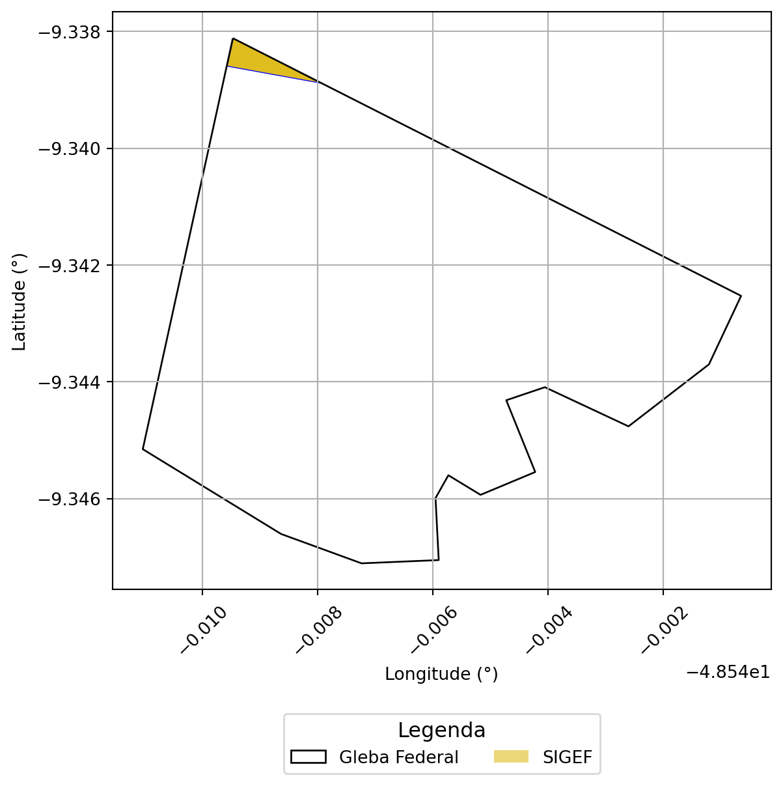
| Código SIGEF | Natureza do Polígono | Área Sobreposta (ha) |
|---|---|---|
| 6a836626-e793-4828-b375-a530b96ffcbc | Particular | 0.4903 |
77.23.7 SNCI
Não há sobreposição
77.24 Gleba Analisada: LOTES7,22,23E24,LOT°POÇOAZUL-FLS02
| Nome da Gleba | Área (ha) |
|---|---|
| LOTES7,22,23E24,LOT°POÇOAZUL-FLS02 | 950.2921 |
77.24.1 Abrangência Municipal
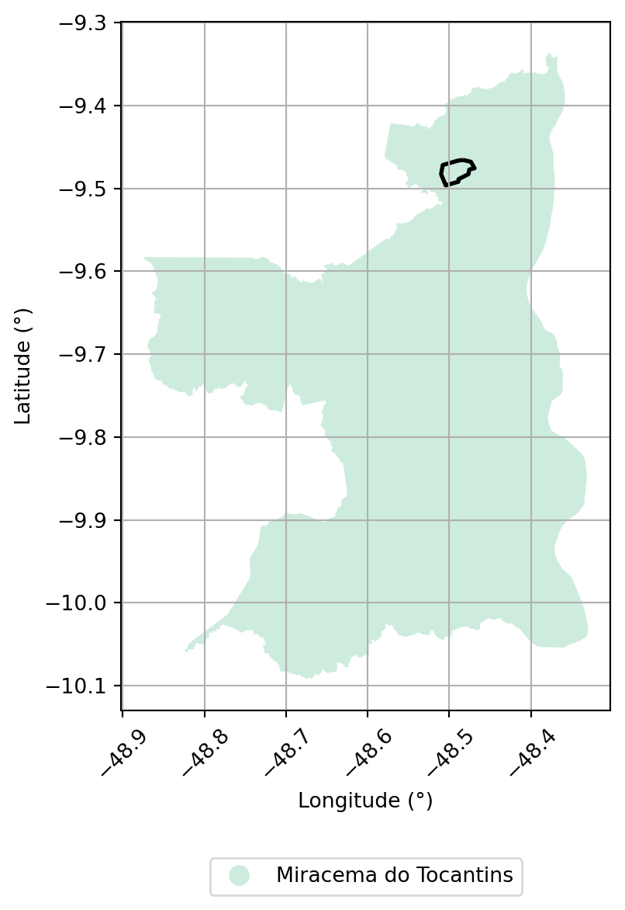
| Código da UF | Estado | UF | Código do Município | Nome do Município |
|---|---|---|---|---|
| 17.0000 | Tocantins | TO | 1713205 | Miracema do Tocantins |
77.24.2 Unidades de Conservação
Não há sobreposição
77.24.3 Terras Indígenas
Não há sobreposição
77.24.4 Projetos de Assentamento
Não há sobreposição
77.24.5 Território Quilombola
Não há sobreposição
77.24.6 SIGEF
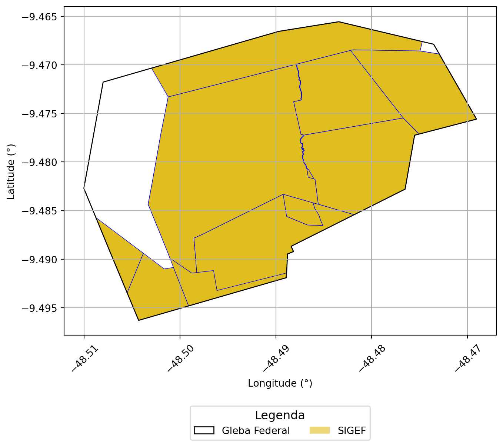
| Código SIGEF | Natureza do Polígono | Área Sobreposta (ha) |
|---|---|---|
| 00f4e92d-5db4-481a-b08f-7f37147811eb | Gleba Pública | 657.4711 |
| 22e17d78-f6b5-4e79-a676-62154e5447a8 | Particular | 16.1888 |
| cdaa272e-6812-4758-89e1-655a73e2337d | Particular | 32.4693 |
| 58927899-2556-41c1-adb4-9d1b9b3198a4 | Particular | 102.8705 |
| eed5b7a8-ec72-4c33-90cd-64807aaff03a | Particular | 275.1425 |
| 35f7ccb0-527e-4e37-a1fc-7d32cf643b30 | Particular | 77.2760 |
| 47c25198-b684-4080-b661-a3822605fcee | Particular | 104.1450 |
| 963e41a7-eeab-46a8-99a2-bc3505249b65 | Particular | 78.3153 |
| 21da82a0-f76c-46a9-8401-ec2f424820c7 | Particular | 91.5737 |
| c046d0d2-d573-4e81-af89-a22c326d946c | Particular | 9.7068 |
77.24.7 SNCI
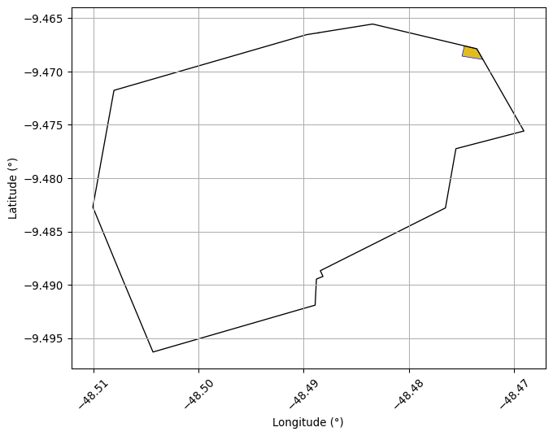
| Código SNCI | Área Sobreposta (ha) |
|---|---|
| 261010000012-24 | 1.8489 |
| 261010000013-05 | 0.0056 |
77.25 Gleba Analisada: LOTES7,22,23E24,LOT°POÇOAZUL-FLS02
| Nome da Gleba | Área (ha) |
|---|---|
| LOTES7,22,23E24,LOT°POÇOAZUL-FLS02 | 355.8583 |
77.25.1 Abrangência Municipal
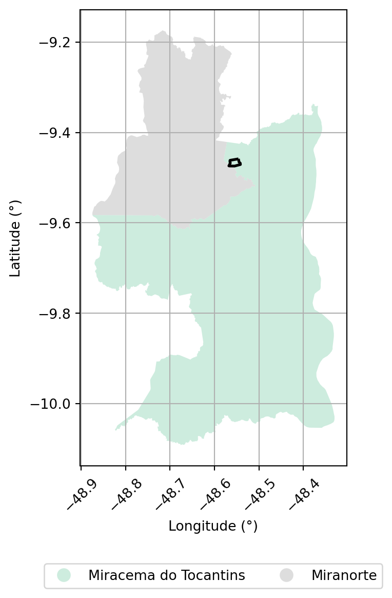
| Código da UF | Estado | UF | Código do Município | Nome do Município |
|---|---|---|---|---|
| 17.0000 | Tocantins | TO | 1713205 | Miracema do Tocantins |
| 17.0000 | Tocantins | TO | 1713304 | Miranorte |
77.25.2 Unidades de Conservação
Não há sobreposição
77.25.3 Terras Indígenas
Não há sobreposição
77.25.4 Projetos de Assentamento
Não há sobreposição
77.25.5 Território Quilombola
Não há sobreposição
77.25.6 SIGEF
| Código SIGEF | Natureza do Polígono | Área Sobreposta (ha) |
|---|---|---|
| 03f50131-798a-4774-97cd-d47d005b4e19 | Particular | 1.0764 |
77.25.7 SNCI
| Código SNCI | Área Sobreposta (ha) |
|---|---|
| 261210000007-29 | 355.7130 |
77.26 Gleba Analisada: LOTES81,LOTEAMENTOLAGEADO1ETAPA
| Nome da Gleba | Área (ha) |
|---|---|
| LOTES81,LOTEAMENTOLAGEADO1ETAPA | 8732.4458 |
77.26.1 Abrangência Municipal
| Código da UF | Estado | UF | Código do Município | Nome do Município |
|---|---|---|---|---|
| 17.0000 | Tocantins | TO | 1716505 | Pedro Afonso |
| 17.0000 | Tocantins | TO | 1721109 | Tocantínia |
77.26.2 Unidades de Conservação
Não há sobreposição
77.26.3 Terras Indígenas
Não há sobreposição
77.26.4 Projetos de Assentamento
Não há sobreposição
77.26.5 Território Quilombola
Não há sobreposição
77.26.6 SIGEF

| Código SIGEF | Natureza do Polígono | Área Sobreposta (ha) |
|---|---|---|
| e4054245-695e-4030-bb93-3f4c4c6f996b | Particular | 462.9370 |
| 9c21746e-efbb-4c86-86df-806a8c9edfd3 | Particular | 1.1704 |
| 5a5bc6f3-39c7-4c82-aff6-ccc9c0bccc0a | Particular | 29.2521 |
| a09d841c-228d-472d-a59f-1d8d11a27a8c | Particular | 323.3537 |
| a0779844-80ca-4907-8509-0beb1b817c4d | Particular | 125.1993 |
| 0aa5aea4-45b1-46c9-8d7e-fae5e0c77983 | Particular | 452.7797 |
| d392ef7b-a86d-46ca-a8d3-41e8d42450b3 | Particular | 426.4044 |
| 35c34817-85c2-4628-a9f0-f0f070e8ea7f | Particular | 77.3027 |
| 013d2778-ab79-4f3b-851f-c80b3347b815 | Particular | 440.8087 |
| b3bf0b0e-080b-4764-a961-d8ec7f8a1bcf | Particular | 9.6566 |
| a4ec38ac-def9-48fe-aa51-7ee67c80eb7a | Particular | 302.1319 |
| 3a858484-43d8-42d2-8781-86add341bd1f | Particular | 0.0864 |
| 46074cda-6cfe-4e44-9164-7a7892d2774d | Particular | 5.8860 |
| b2b9cad8-9540-4529-a03e-9532cf404ee0 | Particular | 347.2813 |
| ee978844-f045-4d20-80c4-a167d736ca6e | Particular | 496.0010 |
| c7b6ac91-85bb-4e4b-ad18-1bc0b479b18b | Particular | 705.8029 |
| e5dc214d-21a1-4b68-acc2-9c1f85a4e56b | Particular | 39.1264 |
| 51b1b752-a647-415a-8eea-751a98d25f60 | Particular | 0.4206 |
| 10f58c08-546d-4804-974c-c744b89d0ee1 | Particular | 4.5160 |
| 849b0423-616c-4e79-be4e-649172b4394e | Particular | 202.9640 |
77.26.7 SNCI
| Código SNCI | Área Sobreposta (ha) |
|---|---|
| 261308000090-96 | 84.9355 |
| 261312000023-82 | 570.0335 |
77.27 Gleba Analisada: LOTES96E96/A,LOTEAMENTORIOPIUM
| Nome da Gleba | Área (ha) |
|---|---|
| LOTES96E96/A,LOTEAMENTORIOPIUM | 1549.6883 |
77.27.1 Abrangência Municipal
| Código da UF | Estado | UF | Código do Município | Nome do Município |
|---|---|---|---|---|
| 17.0000 | Tocantins | TO | 1706100 | Cristalândia |
| 17.0000 | Tocantins | TO | 1717503 | Pium |
77.27.2 Unidades de Conservação
Não há sobreposição
77.27.3 Terras Indígenas
Não há sobreposição
77.27.4 Projetos de Assentamento
Não há sobreposição
77.27.5 Território Quilombola
Não há sobreposição
77.27.6 SIGEF
| Código SIGEF | Natureza do Polígono | Área Sobreposta (ha) |
|---|---|---|
| 242d34bd-9483-42eb-96fe-845c37eaa663 | Particular | 1099.5007 |
| 2f6ddcac-5abb-4a50-b00b-7b4193f35676 | Particular | 18.0199 |
| 698f544d-9652-4607-8b1e-e54730208bf7 | Particular | 170.2826 |
| ca240884-a3c5-4f31-bcae-8dfdfdfbfbbc | Particular | 0.2987 |
| 4eb1f2cf-1492-41af-8611-ac516de05f71 | Particular | 72.8342 |
| 58a9c931-30aa-4d00-9c27-d2c9139e00c2 | Particular | 22.4252 |
| a1c0d287-a59d-4c76-bfde-c20fdfab3aed | Particular | 3.2377 |
| d10832bb-6bfc-4758-adbb-f26d71f77d73 | Particular | 46.8069 |
| 7b332598-db27-408a-8b01-a9c30a132cb0 | Particular | 7.2723 |
| bf46e924-f07c-4e15-aa79-bc67e9d591bf | Particular | 10.4420 |
| 7628fd32-6bdd-4f45-990e-d6bb011de937 | Particular | 1.2187 |
| a2cfa45d-b0ae-4fcd-bb7e-6d4dbc77af11 | Particular | 56.9694 |
| 6cd80738-731a-4852-94dc-3dd4e8177eb2 | Particular | 33.9339 |
77.27.7 SNCI
Não há sobreposição
77.28 Gleba Analisada: LOTES98E99,LOT°RIBEIRÃOPIEDADEFLS01
| Nome da Gleba | Área (ha) |
|---|---|
| LOTES98E99,LOT°RIBEIRÃOPIEDADEFLS01 | 1388.3423 |
77.28.1 Abrangência Municipal
| Código da UF | Estado | UF | Código do Município | Nome do Município |
|---|---|---|---|---|
| 17.0000 | Tocantins | TO | 1704600 | Chapada de Areia |
| 17.0000 | Tocantins | TO | 1713700 | Monte Santo do Tocantins |
77.28.2 Unidades de Conservação
| Nome | Categoria | Responsabilidade | Área Sobreposta (ha) |
|---|---|---|---|
| ÁREA DE PROTEÇÃO AMBIENTAL ILHA DO BANANAL/CANTÃO | Área de Proteção Ambiental | estadual | 1392.9180 |
77.28.3 Terras Indígenas
Não há sobreposição
77.28.4 Projetos de Assentamento
| SIPRA | Nome | Município | Área Sobreposta (ha) |
|---|---|---|---|
| TO0355000 | PA GROTA DE PEDRA | MONTE SANTO DO TOCANTINS | 115.5273 |
77.28.5 Território Quilombola
Não há sobreposição
77.28.6 SIGEF
| Código SIGEF | Natureza do Polígono | Área Sobreposta (ha) |
|---|---|---|
| 7c3b6dc5-7c66-497b-adb8-1b168f9ae6ac | Assentamento | 115.5273 |
| 2e76c5d5-7275-42df-8e77-110240d690b2 | Assentamento Parcela | 99.3418 |
| d93bf816-a26f-4c0a-969a-fe549aeb2426 | Assentamento Parcela | 3.1177 |
| fd3cff43-b72e-4830-ae42-b6b812d5d4af | Assentamento Parcela | 5.7373 |
| c7c81e56-7f62-49dd-8b5b-311cf55278e8 | Assentamento Parcela | 4.0667 |
| 51fbcbc0-dc2d-45e3-9b88-dae5a0a4201c | Assentamento Parcela | 0.0082 |
| a256e7cb-665f-45d1-8583-58f4360685d6 | Assentamento Parcela | 2.3626 |
| dfc34efc-df62-4434-8681-18bb61b7648e | Assentamento Parcela | 0.8931 |
| 121caa5c-f7f0-4e72-aae1-6e0344bf82e7 | Particular | 79.4411 |
| 7f6d5037-a758-4b8b-9b0e-bb69bcdb2ff0 | Particular | 7.3722 |
| 3dc9fc12-8ac1-423e-9f0f-5911723b98f0 | Particular | 15.2427 |
| 2f830cfd-744c-43b3-9c9f-f917e784dec4 | Particular | 116.3577 |
| 7759c884-fa97-4ff3-b955-d488d0b28471 | Particular | 0.7603 |
| cbfe408c-af83-4778-a4c9-e508d6d7526b | Particular | 1.2515 |
| 86cd1661-a6c4-4d53-8ca1-f2fb3cc3e449 | Particular | 12.1508 |
| 73d274e0-514d-47c9-bce0-c93b912a90cb | Particular | 358.4741 |
| 5babbe64-7d6c-41e5-bc55-dffc03948033 | Particular | 84.9486 |
| b11dc91e-c259-468d-9439-9022ab6d83a3 | Particular | 257.7471 |
77.28.7 SNCI
| Código SNCI | Área Sobreposta (ha) |
|---|---|
| 261105000003-31 | 148.1413 |
77.29 Gleba Analisada: LOT°SANTOANTONIO,GLEBA8,2ªETAPA
| Nome da Gleba | Área (ha) |
|---|---|
| LOT°SANTOANTONIO,GLEBA8,2ªETAPA | 12561.1272 |
77.29.1 Abrangência Municipal
| Código da UF | Estado | UF | Código do Município | Nome do Município |
|---|---|---|---|---|
| 17.0000 | Tocantins | TO | 1707306 | Dueré |
| 17.0000 | Tocantins | TO | 1709500 | Gurupi |
77.29.2 Unidades de Conservação
Não há sobreposição
77.29.3 Terras Indígenas
Não há sobreposição
77.29.4 Projetos de Assentamento
Não há sobreposição
77.29.5 Território Quilombola
Não há sobreposição
77.29.6 SIGEF
| Código SIGEF | Natureza do Polígono | Área Sobreposta (ha) |
|---|---|---|
| 65c8dbf0-bbe2-4a78-9dc0-dc48314ede65 | Particular | 273.3112 |
| 231fdc03-752c-49ca-a8f1-d7cb39428faa | Particular | 7.4269 |
| e4b42e32-adba-465b-b69c-0057fda8adf0 | Particular | 2.7496 |
| da7c8361-72d5-43dc-a088-01a0661f900d | Particular | 395.3672 |
| 90997f90-856c-4687-bd15-d7752ae97563 | Particular | 119.7187 |
| 59ba537c-3546-4944-860e-697097cbfced | Particular | 20.1799 |
| 028505bf-c6a5-4fa8-a8da-bdd20436d43e | Particular | 211.7948 |
| a4c5b55a-84f3-40d2-bb0e-6a5d2494bfcd | Particular | 20.7700 |
| 6c13e1ca-c9d3-41ee-94b2-90cd99578d46 | Particular | 70.6163 |
| c5e0e851-1169-4443-9ea8-d4086b804754 | Particular | 49.7054 |
| 353ade0a-97de-4d0d-bb3d-411b0428c726 | Particular | 96.4003 |
| eac73e07-df9b-4f1c-b2e3-85781de7fc40 | Particular | 14.8173 |
| a101aa74-aad6-41b9-bac3-1cf75c3e4abd | Particular | 40.6174 |
| 06bc6e97-419e-4612-bbc5-a568f600dd0c | Particular | 89.9217 |
| a8cefe21-2fa3-441e-ac6f-7d85a853b1ff | Particular | 276.4276 |
| 4f9efcde-9055-42e5-906f-081aa41d6570 | Particular | 33.2589 |
| 36823dc0-c1fe-4ff3-af2b-9498fa50639b | Particular | 51.1260 |
| 2feef801-1c10-4b84-9b49-85d225bf5448 | Particular | 127.8170 |
| 9e66305d-a3c4-42c3-8a53-70d1bd0044e7 | Particular | 65.0181 |
| 00d4adcf-aac5-468b-bb21-efd7e0345767 | Particular | 485.3664 |
| 5baec173-f069-4d3a-a1f9-185b9bb94e54 | Particular | 1.3701 |
| 7b5ce1ba-1f30-4b82-afcb-051deb1aa21c | Particular | 33.6724 |
| c7f94e33-8eb0-4623-8b14-4ff717e896e2 | Particular | 0.4606 |
| ca7c85ca-f7dc-4c27-9999-baa5987412fc | Particular | 214.8402 |
| f78115c0-e060-4ff4-860e-4bbf2c0ca5e4 | Particular | 206.1712 |
| af49a326-2f67-4e69-b2ad-a164a63f331a | Particular | 73.4617 |
| 25ad6be1-aa45-4178-8bd2-e4fde1c192f3 | Particular | 87.0621 |
| 4b658c86-d261-4f93-b364-2ede3db2202e | Particular | 153.1937 |
| e9a8672e-ca04-450e-8127-0df109b88371 | Particular | 97.9975 |
| 3c54d0d8-2dfa-498d-a853-6d7d4bdf8f6d | Particular | 432.4025 |
| 4a95c685-b578-4a5b-b22b-7ab6f1dfe58a | Particular | 8.7574 |
| 925efe63-4297-4b18-9751-805c5d0c2ee6 | Particular | 49.1965 |
| 5f2d724b-d7a6-48a3-aa12-e423638f39e9 | Particular | 32.6302 |
| c7445eee-2ccc-41f4-9b69-42f1869d78a7 | Particular | 48.3545 |
| 3f72b472-5736-4ccc-bef1-97724da56ae8 | Particular | 54.7321 |
| ee550ff8-b9c7-469e-8f0e-ae52f4dea902 | Particular | 80.6849 |
| f8942e39-03a2-444c-a566-de9c76aa5692 | Particular | 11.2556 |
| 420ef875-0ed0-423e-8a0f-0496dd2a2c94 | Particular | 106.9629 |
| beb5035a-394d-4511-9e19-bf00969e0589 | Particular | 279.2173 |
| a9092c85-555e-4dd6-b785-36d4702c4bb3 | Particular | 63.7787 |
| ac643352-6c4b-4a00-b30e-16ea6647352b | Particular | 0.6706 |
| 716bac9f-491d-4b1d-8783-e26dee8da2a9 | Particular | 213.4282 |
| d5f77836-cf11-4b7a-b081-f643dc97af06 | Particular | 39.6753 |
| 8995244e-64c0-4e33-a86b-e451cc636294 | Particular | 92.9958 |
| 5b5514e9-1ca5-4191-8c0d-29d36e7e7679 | Particular | 158.6762 |
| c2b8d576-834b-4573-b3d9-2a4409f1ad18 | Particular | 211.3411 |
| 658a367f-5e27-46d3-b5de-9679cac7e28d | Particular | 397.7440 |
| 2d742f13-b752-4725-a8a5-95e1f557a2c5 | Particular | 33.2680 |
| 1106a720-2285-4eaa-99c1-c7adb7209cad | Particular | 236.8805 |
| b228aa04-2766-4967-9b8a-ab0c218ed0a3 | Particular | 119.1597 |
| 4d1aac29-5465-4185-a9eb-6d9c274f5cc3 | Particular | 92.1518 |
| 97f1c7e4-2339-4610-b63e-a3ae2b2ec366 | Particular | 94.1373 |
| 538cd26d-39c0-42de-9f29-99ccc08ed1c3 | Particular | 289.5052 |
| 293cd1d7-870e-4fe3-a7f2-8f1f9c29580a | Particular | 147.1618 |
| 42c3a4bf-54ae-483a-872d-677dd4f3c59c | Particular | 124.8955 |
| df0e66b7-aef1-46cf-bbf0-2555736eecfd | Particular | 280.7813 |
| ce9349ba-948b-4c2a-b8c6-bbd489baba2a | Particular | 48.4939 |
| f5f6f9a6-6589-4c3c-99b6-deeb4542d8fd | Particular | 42.6329 |
| 8f1693a7-7cf7-492f-bf97-5e5c8c68338d | Particular | 141.3007 |
| e96cc451-8d70-4b31-96a8-2da4bfd0689b | Particular | 73.6088 |
| efd6246c-1b4e-4121-9ab0-d48dde760583 | Particular | 79.8244 |
| df9ff9e3-81bb-4655-9500-ea46a5deb79c | Particular | 109.2077 |
| 21ac0f77-3af3-448c-8dba-02f2fd32bd2f | Particular | 52.6156 |
| 45fb27ee-a3d9-49ac-b41d-fa446521903a | Particular | 128.2908 |
| f003f0f9-bc6b-47c8-9986-1c60d86938db | Particular | 348.5945 |
| f4423671-069a-4390-88ef-20bd75c1bf4d | Particular | 142.2480 |
| 794857c8-acad-4a38-9057-ab7006162075 | Particular | 10.3465 |
77.29.7 SNCI
| Código SNCI | Área Sobreposta (ha) |
|---|---|
| 260508000007-04 | 38.9584 |
| 260709000007-94 | 1100.7970 |
| 261304000068-12 | 55.5982 |
77.30 Gleba Analisada: LOT°SANTOANTONIO,GLEBA8,4ªETAPAFL.B
| Nome da Gleba | Área (ha) |
|---|---|
| LOT°SANTOANTONIO,GLEBA8,4ªETAPAFL.B | 378.3252 |
77.30.1 Abrangência Municipal
| Código da UF | Estado | UF | Código do Município | Nome do Município |
|---|---|---|---|---|
| 17.0000 | Tocantins | TO | 1709500 | Gurupi |
77.30.2 Unidades de Conservação
Não há sobreposição
77.30.3 Terras Indígenas
Não há sobreposição
77.30.4 Projetos de Assentamento
Não há sobreposição
77.30.5 Território Quilombola
Não há sobreposição
77.30.6 SIGEF
| Código SIGEF | Natureza do Polígono | Área Sobreposta (ha) |
|---|---|---|
| 65c8dbf0-bbe2-4a78-9dc0-dc48314ede65 | Particular | 347.8894 |
77.30.7 SNCI
| Código SNCI | Área Sobreposta (ha) |
|---|---|
| 260709000007-94 | 31.8557 |
77.31 Gleba Analisada: LOT°TIUBABREJÃOFL2
| Nome da Gleba | Área (ha) |
|---|---|
| LOT°TIUBABREJÃOFL2 | 11139.1722 |
77.31.1 Abrangência Municipal
| Código da UF | Estado | UF | Código do Município | Nome do Município |
|---|---|---|---|---|
| 17.0000 | Tocantins | TO | 1702000 | Araguaçu |
77.31.2 Unidades de Conservação
Não há sobreposição
77.31.3 Terras Indígenas
Não há sobreposição
77.31.4 Projetos de Assentamento
| SIPRA | Nome | Município | Área Sobreposta (ha) |
|---|---|---|---|
| GO0113000 | PA LAGEADO | SAO MIGUEL DO ARAGUAIA | 910.5314 |
77.31.5 Território Quilombola
Não há sobreposição
77.31.6 SIGEF
| Código SIGEF | Natureza do Polígono | Área Sobreposta (ha) |
|---|---|---|
| 61d39756-e7a4-436f-b364-8e0325178b0d | Particular | 260.3996 |
| 1831718a-9d72-4da0-aec1-1ddbb7605353 | Particular | 254.3856 |
| 8499fca2-f55f-4a12-b1d5-264797a93614 | Particular | 412.9690 |
| 4ae55db1-17bc-43eb-aff4-b5f762b590aa | Particular | 787.8778 |
| 80326e55-1842-4340-b240-b87a460ed359 | Particular | 134.4590 |
| 7a417f07-119c-4517-9510-4f83f0424b65 | Particular | 100.3152 |
| 0d356185-eb72-4793-a20d-38ed74bc9f2a | Particular | 47.6838 |
| 36c75f05-0d76-4cd2-8364-4e5cb4d5498d | Particular | 38.0251 |
| 4a89a52b-8244-4204-9f56-3b3d96786975 | Particular | 38.0784 |
| 6e036dc7-26ef-4f95-a218-a90faa69ee07 | Particular | 28.8657 |
| dbde8687-67bb-4810-8a9a-12d17b6f7f65 | Particular | 79.8600 |
| 34a5b82c-4bfb-4a10-9cd6-8990928bb92d | Particular | 50.2675 |
| 8e077343-ac54-46f3-bb64-9527d7094c23 | Particular | 93.6284 |
77.31.7 SNCI
| Código SNCI | Área Sobreposta (ha) |
|---|---|
| 261307000053-15 | 23.7537 |
| 041405000003-41 | 22.9539 |
| 041110000052-60 | 2105.8931 |
77.32 Gleba Analisada: LOT°TOCANTINSESTªTEREZA-TERRENOBREJÃO,LOTE09
| Nome da Gleba | Área (ha) |
|---|---|
| LOT°TOCANTINSESTªTEREZA-TERRENOBREJÃO,LOTE09 | 465.0723 |
77.32.1 Abrangência Municipal
| Código da UF | Estado | UF | Código do Município | Nome do Município |
|---|---|---|---|---|
| 17.0000 | Tocantins | TO | 1716604 | Peixe |
77.32.2 Unidades de Conservação
Não há sobreposição
77.32.3 Terras Indígenas
Não há sobreposição
77.32.4 Projetos de Assentamento
Não há sobreposição
77.32.5 Território Quilombola
Não há sobreposição
77.32.6 SIGEF
Não há sobreposição
77.32.7 SNCI
| Código SNCI | Área Sobreposta (ha) |
|---|---|
| 261207000013-47 | 30.0830 |
| 261102000002-71 | 383.7047 |
| 261101000005-98 | 53.3339 |
77.33 Gleba Analisada: LOT°TOCANTINSESTªTEREZA-TERRENOTAPUIO,LOTE21
| Nome da Gleba | Área (ha) |
|---|---|
| LOT°TOCANTINSESTªTEREZA-TERRENOTAPUIO,LOTE21 | 29.0657 |
77.33.1 Abrangência Municipal
| Código da UF | Estado | UF | Código do Município | Nome do Município |
|---|---|---|---|---|
| 17.0000 | Tocantins | TO | 1716604 | Peixe |
77.33.2 Unidades de Conservação
Não há sobreposição
77.33.3 Terras Indígenas
Não há sobreposição
77.33.4 Projetos de Assentamento
Não há sobreposição
77.33.5 Território Quilombola
Não há sobreposição
77.33.6 SIGEF
| Código SIGEF | Natureza do Polígono | Área Sobreposta (ha) |
|---|---|---|
| f564e001-58b0-449e-907f-a1ba06d06624 | Particular | 29.1901 |
77.33.7 SNCI
Não há sobreposição
77.34 Gleba Analisada: LOT°TORIBEROGLEBAD-MATRICULA-R.1-M.566_CRICRISTALA
| Nome da Gleba | Área (ha) |
|---|---|
| LOT°TORIBEROGLEBAD-MATRICULA-R.1-M.566_CRICRISTALA | 8818.8289 |
77.34.1 Abrangência Municipal
| Código da UF | Estado | UF | Código do Município | Nome do Município |
|---|---|---|---|---|
| 17.0000 | Tocantins | TO | 1706258 | Crixás do Tocantins |
| 17.0000 | Tocantins | TO | 1718899 | Santa Rita do Tocantins |
77.34.2 Unidades de Conservação
Não há sobreposição
77.34.3 Terras Indígenas
Não há sobreposição
77.34.4 Projetos de Assentamento
Não há sobreposição
77.34.5 Território Quilombola
Não há sobreposição
77.34.6 SIGEF
| Código SIGEF | Natureza do Polígono | Área Sobreposta (ha) |
|---|---|---|
| b9900fa8-4831-477b-8c57-277490b36319 | Gleba Pública | 422.4749 |
| 97985710-cef6-4923-bfc8-ec169e877759 | Particular | 19.0892 |
| e3368f03-64fc-4d38-8bc7-dd0a5fa7a480 | Particular | 85.9426 |
| 9b774d5f-cc11-45c2-9c60-bb2aee8724c8 | Particular | 2.0654 |
| 8a407b32-2ca0-4148-9384-d4a3a4773acd | Particular | 27.0104 |
| e5a54553-d63c-4795-afe3-0040e0d784a4 | Particular | 34.2301 |
| c4ab5a60-86de-4a94-943c-c5d48b3b3b86 | Particular | 72.4991 |
| 7554edb9-c7b9-471a-8501-55ddfa888491 | Particular | 153.4222 |
| f54dbffa-0bd5-4e93-afb9-470f8c74f533 | Particular | 177.5948 |
| 302e3d6a-9a70-45a5-be59-c770060d69fc | Particular | 157.0857 |
| 8ba540a2-b9ec-41fb-9051-80b1e0ce62e5 | Particular | 178.4720 |
| 703bcfc1-e594-4fd0-b008-1409cf834c1d | Particular | 24.8643 |
| 79009f11-9960-4c8b-ab58-83750784afe3 | Particular | 78.7571 |
| 2cb458a4-6288-40b2-a2d0-46893ef6ad06 | Particular | 1.2180 |
| 32936479-f443-48ff-a3b6-69ed37693c39 | Particular | 65.8692 |
| 673c2908-7125-4edc-89e6-87aeaa8c8825 | Particular | 45.0790 |
| afb3f8ce-2637-4af8-8df8-bf1c74a33637 | Particular | 234.4508 |
| 0fc6302d-9c47-414f-b199-378a066645b5 | Particular | 43.2665 |
| 84831087-c258-4c80-a6a6-23f7a6333cdd | Particular | 178.7657 |
| 3bd9e9d9-f26e-49be-a8bf-e9ceed965a9f | Particular | 106.7753 |
| b770f0d1-70bd-4cdb-bc65-7df9f54e881c | Particular | 39.4813 |
| c566b996-e4cb-409b-a82b-d397d17ee2b1 | Particular | 5.4359 |
| ad9569ee-aa1c-48db-9173-599ac560d050 | Particular | 310.3218 |
| bf2cbdc6-accf-46c8-84a5-58d2c2bcf671 | Particular | 18.9722 |
| 1b659943-80a4-4a14-9f3a-0c40b420b852 | Particular | 5.3563 |
77.34.7 SNCI
Não há sobreposição
77.35 Gleba Analisada: LOT°TORIBERÓ-GLEBA2-MATRICULA-718_CRICRISTALANDIA
| Nome da Gleba | Área (ha) |
|---|---|
| LOT°TORIBERÓ-GLEBA2-MATRICULA-718_CRICRISTALANDIA | 13594.5229 |
77.35.1 Abrangência Municipal
| Código da UF | Estado | UF | Código do Município | Nome do Município |
|---|---|---|---|---|
| 17.0000 | Tocantins | TO | 1706258 | Crixás do Tocantins |
| 17.0000 | Tocantins | TO | 1718899 | Santa Rita do Tocantins |
77.35.2 Unidades de Conservação
Não há sobreposição
77.35.3 Terras Indígenas
Não há sobreposição
77.35.4 Projetos de Assentamento
Não há sobreposição
77.35.5 Território Quilombola
Não há sobreposição
77.35.6 SIGEF
| Código SIGEF | Natureza do Polígono | Área Sobreposta (ha) |
|---|---|---|
| b9900fa8-4831-477b-8c57-277490b36319 | Gleba Pública | 0.0000 |
| 987ba510-4845-4d3e-898f-e52cd7878d25 | Gleba Pública | 185.8561 |
| 2094a4da-658f-4d22-94fc-815e56fd17ee | Particular | 2.1579 |
| 82a72136-208e-4df6-82e8-c1162e95e2ea | Particular | 443.7279 |
| 86a49148-0967-4ec5-89eb-2aefcab66c4b | Particular | 253.1713 |
| 8e5cdf85-5b1d-40d4-851a-9276332bf661 | Particular | 183.7115 |
| f3b51786-1a44-4166-840a-644605868aa1 | Particular | 82.3039 |
| ee2f89ca-e667-4d53-9207-6bc0c1e8b94c | Particular | 320.5212 |
| 32b8a702-5885-42f7-8c46-2281c93b2d01 | Particular | 2.4027 |
| c9e90b62-f689-46a4-a564-9812ba1961d6 | Particular | 44.3230 |
| 9910c7e8-30bc-4b73-ad18-bcc581fe366d | Particular | 244.3521 |
| a0cd8d6b-91fd-4f2a-b0c7-db89ea0eb948 | Particular | 389.2047 |
| 72c87dc1-3744-4640-a018-41d9f850efe1 | Particular | 16.7110 |
| 60dd3180-a86a-4b50-9af3-3069bdb96ccd | Particular | 27.1880 |
| 8a18cd7b-02db-4c81-bf2b-5081bed4574a | Particular | 85.3100 |
| f1933906-436c-4d1e-b343-3ddebed615fc | Particular | 318.7803 |
| fbba0767-f78c-4e35-b639-c947a57b30a4 | Particular | 843.7166 |
| bfa69c0a-00b1-496a-b940-39b833eb1f4b | Particular | 18.7840 |
| 719edf9c-d3ae-4d22-852b-0d39e55f04b9 | Particular | 149.9335 |
| 9d3082bd-49bd-4028-87cd-206783350292 | Particular | 3.2632 |
| 527ccdc3-d237-4fa3-916e-5410dc307054 | Particular | 15.6670 |
| c7288fcc-caa4-42be-b6a9-9ac96be1edd8 | Particular | 26.3497 |
| 884e7fcb-66e6-4ecb-a8af-f27f1cf3b1b0 | Particular | 2.5821 |
| 3484abf4-9c65-4735-863e-b5084b648686 | Particular | 4.3434 |
| 47a0d444-7e49-4a33-a2ff-ea7f53782292 | Particular | 44.2402 |
| 230a9063-8d09-431a-8f8f-346308549bde | Particular | 1759.7859 |
| fe50e4b7-aca9-42c8-9449-eac7e2f754de | Particular | 76.2604 |
| 529551d1-5b0c-44f5-8fee-553ce7ffa00a | Particular | 0.3097 |
| 488d75dc-244b-4de9-9704-851b934b4c32 | Particular | 115.3930 |
| db08a4b0-b6c6-42a3-a15e-207281012d71 | Particular | 130.9604 |
| ac96cdf9-f9e1-4b21-bb4d-82f95921b740 | Particular | 378.1730 |
| 5b92248b-3b65-45af-916d-794c2b25719d | Particular | 107.7216 |
| 7ec587a1-fee5-4875-994a-735a4d2ccb20 | Particular | 27.3528 |
| f336a4f1-1ac1-43cd-9ad4-4d6ebee600c3 | Particular | 103.0222 |
| 1179e628-c2ee-4afa-9f04-8d82f0c0fc80 | Particular | 0.0320 |
| c60a1246-779a-4932-b849-1eada9e29124 | Particular | 620.9082 |
| 08f9235f-51b3-496c-ad2c-86cdb892ce35 | Particular | 311.1629 |
| 2696beea-c692-49d3-856e-bf6166f7f519 | Particular | 253.9346 |
| 97985710-cef6-4923-bfc8-ec169e877759 | Particular | 205.7786 |
| 8b98e721-2bbe-44e7-9c06-247702a25d81 | Particular | 274.2586 |
| c566b996-e4cb-409b-a82b-d397d17ee2b1 | Particular | 264.3098 |
| 3bd9e9d9-f26e-49be-a8bf-e9ceed965a9f | Particular | 217.2421 |
| 84831087-c258-4c80-a6a6-23f7a6333cdd | Particular | 90.1525 |
| accee7c3-301a-41d5-9739-f2dbdc95b44d | Particular | 149.4315 |
| 0fc6302d-9c47-414f-b199-378a066645b5 | Particular | 619.6978 |
| b730e1c6-a348-431d-9b23-da8398c66472 | Particular | 1292.7061 |
| 3809e060-4a3f-4a05-9618-e78aba1c3976 | Particular | 90.9124 |
| 3317a53a-d4a5-426a-ba1b-e682d35ea547 | Particular | 76.2618 |
| c4cc9382-aece-4f9c-a706-fb4b26cf1dee | Particular | 110.9161 |
| 8a407b32-2ca0-4148-9384-d4a3a4773acd | Particular | 0.0000 |
77.35.7 SNCI

| Código SNCI | Área Sobreposta (ha) |
|---|---|
| 261401000102-50 | 7.6833 |
| 261401000103-31 | 168.7867 |
| 261401000099-10 | 634.6809 |
| 261203000040-04 | 185.8720 |
77.36 Gleba Analisada: LOT°TORIBERÓGLEBA1
| Nome da Gleba | Área (ha) |
|---|---|
| LOT°TORIBERÓGLEBA1 | 63017.5271 |
77.36.1 Abrangência Municipal

| Código da UF | Estado | UF | Código do Município | Nome do Município |
|---|---|---|---|---|
| 17.0000 | Tocantins | TO | 1706258 | Crixás do Tocantins |
| 17.0000 | Tocantins | TO | 1707306 | Dueré |
| 17.0000 | Tocantins | TO | 1718899 | Santa Rita do Tocantins |
77.36.2 Unidades de Conservação
Não há sobreposição
77.36.3 Terras Indígenas
Não há sobreposição
77.36.4 Projetos de Assentamento
Não há sobreposição
77.36.5 Território Quilombola
Não há sobreposição
77.36.6 SIGEF
| Código SIGEF | Natureza do Polígono | Área Sobreposta (ha) |
|---|---|---|
| b9900fa8-4831-477b-8c57-277490b36319 | Gleba Pública | 710.9677 |
| 79009f11-9960-4c8b-ab58-83750784afe3 | Particular | 0.2161 |
| 34a0136b-4c03-45e4-90cd-15355fe352fc | Particular | 0.4139 |
| cdd5bc1c-4340-457a-8e73-013d6e398f75 | Particular | 348.9496 |
| b754c7cc-fa49-4f1e-9c49-12fad03fb3ad | Particular | 5.5029 |
| 613d922c-c61b-4b1a-b50d-dcafe837a49f | Particular | 21.4250 |
| 6ca45d1a-89be-4c4b-b3b2-586c756fd113 | Particular | 634.7777 |
| 20a30acc-e89e-4e53-bdc5-e8303cffabc8 | Particular | 64.8328 |
| 417d85fb-de0f-4779-9c44-6af68f4d5ed8 | Particular | 571.7186 |
| 7e2b3a4c-1466-4d23-9dc1-dc04015ef812 | Particular | 126.9944 |
| d7170d3a-8591-409b-831c-3694926cf2c9 | Particular | 269.4957 |
| 8f06adf7-e882-4adb-9ee3-4531aaee04a3 | Particular | 313.0340 |
| c6d7be8d-83f1-45c5-b60c-816c5db58e59 | Particular | 148.0570 |
| a02d134c-bf69-40d7-9d7c-9c552cd98378 | Particular | 3868.9330 |
| 5e6c4e04-a267-4476-98fe-b731542d4ee6 | Particular | 437.1428 |
| 9b774d5f-cc11-45c2-9c60-bb2aee8724c8 | Particular | 504.0983 |
| c260db55-8ffe-4868-9115-8fef17e1e7fd | Particular | 205.2523 |
| 2ad93f59-8132-435d-8d76-036e3fa4225e | Particular | 1010.5023 |
| bd30a188-a445-4801-9c49-d1b666efde2b | Particular | 480.4695 |
| 05778573-c13c-4b63-9d8f-bc097947f693 | Particular | 531.1115 |
| afb4bfa2-60b2-405b-a604-d55ae591238a | Particular | 1039.8458 |
| e00036ce-ed1c-4c95-8285-7d2d42aa2db1 | Particular | 128.5434 |
| c566fc82-e995-40e1-ab0b-c5d2b451a165 | Particular | 47.3180 |
| 0af084e0-abf0-4e86-b6f3-e6f9c40a7a2a | Particular | 534.7700 |
| a0e73553-9dd8-4f8e-8e39-0a15eb695355 | Particular | 730.4928 |
| 5d8de0a2-4a67-4dd2-86d6-539124a922fb | Particular | 414.7975 |
| 2fd4fbcc-0a27-4e45-af3f-6279d14df491 | Particular | 315.0411 |
| 52ce8600-4956-48d0-99ba-d861a6584af2 | Particular | 513.4246 |
| 2c2806c8-f01c-4a78-9c35-7fd9946fbc21 | Particular | 443.2317 |
| 7ad327e8-ca4b-4d27-bbbb-1db255a9d319 | Particular | 534.1603 |
| 7ea80b53-c982-47c8-99b7-df31f6f7263d | Particular | 258.0958 |
| a1e5a644-a30f-435b-8d3f-73a5d370b99e | Particular | 304.6375 |
| 37f6ee14-33d3-4e97-8a49-a6a14d25301f | Particular | 15.5330 |
| 5a71bb55-2d08-40d5-bb6c-51c21cbf5ee8 | Particular | 87.2906 |
| 32cc3c6b-955a-4a34-8c3b-e2aada1fc4c6 | Particular | 259.9216 |
| ce3e81ef-17c3-4541-a84c-78b51f309530 | Particular | 292.0602 |
| 6d478497-8503-4a52-87f5-7b3b152cbf07 | Particular | 0.6792 |
| f6c18186-8136-43e5-87c0-a13e37630e44 | Particular | 0.0031 |
| 3ff9371b-ca91-40f7-b754-5a7b4b7f8dde | Particular | 4.7198 |
| 0e46ebcf-63dd-4d7a-8e5f-d522f6907b28 | Particular | 2.5975 |
| d58d6315-2c7b-4818-93a5-a4f1ee1ecb88 | Particular | 83.3160 |
| 41724d10-5794-4d0f-891a-017c33c76b4d | Particular | 1.8020 |
| 3640f959-17e0-438a-bf2b-00e4dd6d5899 | Particular | 91.5465 |
| 5d8fdef2-4a13-4902-9593-368b5259531c | Particular | 83.3603 |
| 14b71f74-c76e-422e-9d3c-3bd65b5ad649 | Particular | 41.1392 |
| a7e841ff-81f4-4e21-8da8-da59e9d4ca6f | Particular | 1041.2611 |
| 8af5ef1f-8bf7-45a3-a895-9db6e7a4b603 | Particular | 359.6991 |
| 4fa2a3da-54e1-4d91-848c-ab5f22fd40cf | Particular | 352.4402 |
| cee0c036-c20e-4db3-9296-788802261f99 | Particular | 298.1578 |
| 13ef4b3e-3104-4804-9ea3-114df571d414 | Particular | 3.5587 |
| 0c42f7e6-542f-4882-8039-12c0e15b14c6 | Particular | 173.7563 |
| b7eaeb17-ab2f-4552-a891-0f89830ed894 | Particular | 115.1788 |
| ec113d9f-c90f-46dc-8651-d3e716c20041 | Particular | 2803.5625 |
| e150b2ff-eeb6-4596-8d4a-75cb3c18e61d | Particular | 328.3726 |
| ae868352-3c94-4c0e-8b77-5914b760a74a | Particular | 1531.6069 |
| 1b659943-80a4-4a14-9f3a-0c40b420b852 | Particular | 824.7590 |
| 01886003-47d3-4a82-8ed7-07550a4b11bf | Particular | 509.3303 |
| 703bcfc1-e594-4fd0-b008-1409cf834c1d | Particular | 670.9532 |
| 7fce311f-14db-4983-8441-1b0235b74c42 | Particular | 2.7266 |
| eb009973-5761-42ed-9ba9-ce1eaa569b9f | Particular | 62.9222 |
| 503f1072-0cbb-44fb-ade9-512d61a9303a | Particular | 0.7007 |
| d91ac08f-04bc-4f1d-8c91-8e1aab5d8625 | Particular | 29.4087 |
| b8256372-3ac2-4be5-8fd9-5f25ace32211 | Particular | 837.2216 |
| 5d6f86e0-f2ed-46d6-af90-d3576b7e576d | Particular | 453.9310 |
| 11d404ae-40ea-49f1-a573-f3088e2fe309 | Particular | 615.3127 |
| 22e98927-42ba-43c1-870c-ed2d1a51af88 | Particular | 546.4875 |
| 175a28e7-2b17-4411-b593-be5341d0378a | Particular | 526.4749 |
| 7d7834a6-ec0f-405e-b629-133cf15c003c | Particular | 3.7869 |
| 74ad0b43-3c5f-4adc-b3f4-e729df5336b3 | Particular | 9.1536 |
| b3788f09-0bc2-4915-9f71-438315fe4980 | Particular | 0.3752 |
| d6ab3a98-0189-4ed7-99d1-cceed3105b12 | Particular | 131.3267 |
| f8ba4585-0b56-4fa8-8775-5896bf7b2164 | Particular | 211.4174 |
| 4d7e6108-dc46-4348-bbba-6fe685223ee8 | Particular | 330.9334 |
| 91285c73-6cd0-4028-8c28-212289bd2da8 | Particular | 384.2849 |
| 27fa1841-ebd9-44e1-b3e2-46e8058eae97 | Particular | 1.6636 |
| b145ccf4-2634-4838-bd81-8b538759d44d | Particular | 285.8763 |
| cb34e3ee-312c-4712-bf79-37ba8a53e9ae | Particular | 140.8637 |
| 91a6db25-656c-4ddb-ab4d-0e036b9b7f92 | Particular | 235.4844 |
| f3f5fefe-5794-4aa5-8a09-3dcdf07952e3 | Particular | 296.6945 |
| 26000752-aca8-4606-ba7e-68ef8e27fc7b | Particular | 142.7748 |
| 72c6ae0f-39aa-450f-9f70-de4179bd27bc | Particular | 211.8649 |
| eae9c226-261e-437e-b807-1a0c5510d669 | Particular | 279.8395 |
| 3f0e531a-03dd-488a-83b1-d959bcb90ae1 | Particular | 157.4534 |
| 9426827f-f12e-4287-ac0e-aa19d7b16a0f | Particular | 19.5859 |
| 24b0688f-99f9-45bf-ba66-c07ba5f2cb19 | Particular | 97.1653 |
| e2b0b02e-e190-4925-87e3-fc08a8e4c810 | Particular | 52.3700 |
| daff55e4-cbd9-464c-bae3-e83bfc0c9bce | Particular | 178.9467 |
| a5a6bf88-0b0c-4f8d-9b94-e00143c680f5 | Particular | 23.7056 |
| 42c6faa3-a548-4c7e-8221-4d6f62ed3138 | Particular | 41.8429 |
| aa5a5434-a6b9-46ab-8a7e-61a0e14300e3 | Particular | 246.7442 |
| 9404c4d1-5212-4497-b6d3-7968e75a332b | Particular | 1525.9602 |
| 1dc6e5e6-885d-473e-9e52-99838323d527 | Particular | 347.7312 |
| c74fe6fe-a5d3-4df2-80e6-34f1900f4507 | Particular | 192.3865 |
| d5389191-b239-42b2-81d3-af63f6b760ee | Particular | 200.7672 |
| 7554edb9-c7b9-471a-8501-55ddfa888491 | Particular | 5.1658 |
| a916ae9b-b428-417f-a256-4bc2712d9030 | Particular | 57.2122 |
| f54dbffa-0bd5-4e93-afb9-470f8c74f533 | Particular | 9.2032 |
| 8ba540a2-b9ec-41fb-9051-80b1e0ce62e5 | Particular | 13.4048 |
| 4a07ec66-1f4e-49fe-8203-3e5daab2ae88 | Particular | 70.1743 |
| e40d412e-08cd-477c-91a8-33d822c6b0a6 | Particular | 35.7909 |
| f3d5a9bb-ed0f-459c-8731-a34625f6ecd2 | Particular | 492.5724 |
| dbffd374-9e12-483c-8a0d-516ecec7ff0a | Particular | 79.0600 |
| c38d1748-6660-4d5b-ba51-58a6fd9f7b75 | Particular | 17.9533 |
| 7740b655-2e70-493b-9582-829d19942bc3 | Particular | 23.2191 |
| a9fb9d43-cf22-47e2-8949-23bfaa796550 | Particular | 3.5282 |
| 5e25b7ce-ab1e-48a3-b979-172821ec6e37 | Particular | 31.5802 |
| e3789a93-8502-4202-af3f-daf92d6452a8 | Particular | 730.9909 |
| 4d385e7e-5cde-486f-ab6f-7e6731dd2ee6 | Particular | 337.1684 |
| f3059deb-a7d4-484d-af78-7e06524aa780 | Particular | 293.9683 |
| 4821f716-702f-44e0-a155-a543dc942b2f | Particular | 76.6291 |
| 32e48953-1a82-435a-ab89-a8775eec184d | Particular | 1613.8433 |
| c4ab5a60-86de-4a94-943c-c5d48b3b3b86 | Particular | 269.9828 |
| 83e0664e-5117-4165-83ea-66671598a407 | Particular | 564.5600 |
| 4c4c000e-e98d-42ad-a28f-0316c002e8ca | Particular | 87.3596 |
| 7e8a1349-c0d8-44b7-878a-960766ab6d78 | Particular | 138.8816 |
| 535c213e-8361-4518-ae6e-465a34319ec7 | Particular | 76.2273 |
| b801f0ab-2717-40a0-be29-afe406cb6517 | Particular | 287.8884 |
| 17c3bee8-c34d-4748-9744-b218ce973e6b | Particular | 223.9199 |
| 53f23481-ddff-487a-8aa4-05569037c7dd | Particular | 37.5269 |
| efeca5ab-1746-467f-9560-df5199cd882b | Particular | 284.8540 |
| a71cc282-3930-4216-ac2e-ce17ee84f199 | Particular | 683.7129 |
| 8a45ea94-a4e8-4339-8e39-ba13d8bd1882 | Particular | 23.0605 |
| 9cc37d40-392c-4031-b1cc-42174f0961e2 | Particular | 339.8647 |
| 87280571-8086-4480-8924-eac46b3e90a7 | Particular | 76.8528 |
| b8eccc54-6510-4887-a3dd-41376c68af5c | Particular | 311.7348 |
| 7e00683c-c462-4af9-ae75-d15617262ab7 | Particular | 1900.6829 |
| 4f11afd8-0630-479f-ad1b-58c5827f7604 | Particular | 238.6519 |
| 5f5a90b3-ec00-42d8-9442-1ea2ef1ee6bd | Particular | 528.3061 |
| b115eb3f-b01a-440c-a54c-eb5b4370d292 | Particular | 558.9090 |
| 40e74018-3ad2-4f67-be2a-c55f921a6c42 | Particular | 1110.0743 |
| 18c2279d-cf99-4d2c-b5fc-06b1531ed406 | Particular | 17.2792 |
| 53777551-27ab-4b28-b951-a4a13b7a3812 | Particular | 119.2661 |
| 20fad6a5-bd0c-45f9-97d7-f48ecb2a2bae | Particular | 162.2096 |
| 1ed9fc13-7b3b-4028-ba3e-0f5b708bae85 | Particular | 652.7264 |
77.36.7 SNCI
| Código SNCI | Área Sobreposta (ha) |
|---|---|
| 261307000105-80 | 71.8261 |
| 261107000008-07 | 445.8236 |
| 261303000058-14 | 33.9233 |
| 260704000015-62 | 4.9559 |
| 261108000029-50 | 445.9374 |
| 260907000010-07 | 16.8434 |
| 261011000036-28 | 752.2497 |
| 261401000017-74 | 882.2188 |
| 261212000108-25 | 679.4685 |
| 261311000082-06 | 557.0244 |
| 261212000002-77 | 558.4721 |
| 261211000037-70 | 2625.7866 |
77.37 Gleba Analisada: LOT°TRÊSBARREIRAS3ªETAPAFOLHA3
| Nome da Gleba | Área (ha) |
|---|---|
| LOT°TRÊSBARREIRAS3ªETAPAFOLHA3 | 4707.7221 |
77.37.1 Abrangência Municipal
| Código da UF | Estado | UF | Código do Município | Nome do Município |
|---|---|---|---|---|
| 17.0000 | Tocantins | TO | 1702000 | Araguaçu |
77.37.2 Unidades de Conservação
Não há sobreposição
77.37.3 Terras Indígenas
Não há sobreposição
77.37.4 Projetos de Assentamento
Não há sobreposição
77.37.5 Território Quilombola
Não há sobreposição
77.37.6 SIGEF
| Código SIGEF | Natureza do Polígono | Área Sobreposta (ha) |
|---|---|---|
| 0ee6e80f-d7cb-4de2-9f4c-83687fc27554 | Particular | 102.6699 |
| 90ed4c0e-aa82-4197-9a38-abc782991560 | Particular | 2.0738 |
| 7b4e4f7c-9d20-4aea-be4b-9666dfc8fd7b | Particular | 3.7188 |
| c14dc256-46f4-4bd6-9892-ce5beace17c2 | Particular | 2.0496 |
| 64a690ce-8599-4079-8ebc-e0cf23677a91 | Particular | 0.2660 |
| baaeda30-2754-4a23-ac1b-c24913c4777e | Particular | 0.6962 |
| 74f91682-4c6e-49cf-912e-120947430763 | Particular | 1.8801 |
| 77d221e8-44fb-43b9-8094-69702bbc44d3 | Particular | 28.2534 |
| 910fbc30-62cc-4ddc-887a-39434de14d51 | Particular | 109.4263 |
| 7b8b4923-ad41-47b6-acfb-c9c1a41299da | Particular | 41.2903 |
| 09f74f57-932a-4c59-b5de-3f521b069695 | Particular | 128.9686 |
| d9030607-8d3c-48ad-b825-238122345ccf | Particular | 81.6670 |
| d71016ae-71a0-4be9-9260-fd02290af176 | Particular | 19.1528 |
| ba3f4898-7454-48d4-bcc7-15ee5697bd32 | Particular | 22.7514 |
| 70ad1df5-cfba-4e54-854a-89bae9de3dce | Particular | 3.9282 |
| 4ab1d48d-0a50-42ab-8e1f-05424daec261 | Particular | 30.4544 |
| 93cf9cb5-6656-4d99-9c60-7c7b90d0343b | Particular | 98.1020 |
| 26a30c3a-9789-4657-8be2-90f8adf2c799 | Particular | 210.8182 |
| c42a1a05-ece4-45a8-a275-1f483edd5e89 | Particular | 466.2088 |
| bc8182a3-568d-42f4-aa57-7848e02205a0 | Particular | 913.8528 |
| d33b6477-c4f2-42ba-81ae-af1bf06a5e5d | Particular | 16.5087 |
77.37.7 SNCI
Não há sobreposição
77.38 Gleba Analisada: LOTº FAZENDA SERRA - GLEBA 12
| Nome da Gleba | Área (ha) |
|---|---|
| LOTº FAZENDA SERRA - GLEBA 12 | 14207.6698 |
77.38.1 Abrangência Municipal
| Código da UF | Estado | UF | Código do Município | Nome do Município |
|---|---|---|---|---|
| 17.0000 | Tocantins | TO | 1710706 | Itaguatins |
| 17.0000 | Tocantins | TO | 1720101 | São Bento do Tocantins |
77.38.2 Unidades de Conservação
Não há sobreposição
77.38.3 Terras Indígenas
Não há sobreposição
77.38.4 Projetos de Assentamento
| SIPRA | Nome | Município | Área Sobreposta (ha) |
|---|---|---|---|
| TO0287000 | PA VALE DA SERRA DA CONCEIÇÃO | SAO BENTO DO TOCANTINS | 132.4864 |
| TO0083000 | PA REIS | ITAGUATINS | 20.2071 |
| TO0216000 | PA CARAIBINHA | ITAGUATINS | 10.6475 |
| TO0287000 | PA VALE DA SERRA DA CONCEIÇÃO | SAO BENTO DO TOCANTINS | 1181.8398 |
77.38.5 Território Quilombola
Não há sobreposição
77.38.6 SIGEF
| Código SIGEF | Natureza do Polígono | Área Sobreposta (ha) |
|---|---|---|
| 4aaf0ad2-91c4-4718-bcbb-d230af6ba6d8 | Gleba Pública | 14292.6135 |
| 0d67ba1e-2f18-4ca1-a4ac-b86d5d8fd345 | Particular | 7.8649 |
| 92473ffa-0b31-477b-adb8-68f626e08362 | Particular | 79.0990 |
| ec97dfd3-c1ad-496c-b6bc-d382d5e5447c | Particular | 87.9906 |
| 1ea4859e-723b-4b84-b637-5cf36f40bd6c | Particular | 67.8843 |
| db4b4924-0f43-4115-a6f3-2611725a6a15 | Particular | 199.4660 |
| 08b20868-dd62-4bf7-aa92-0ee31e62df85 | Particular | 77.1318 |
| 20e5a5d5-3aa8-4ee2-8dcd-0f5a779de5e9 | Particular | 52.3654 |
| 6aa34aee-9e65-4485-923d-0856b9ddde98 | Particular | 21.9777 |
| c201a78c-72d3-41ab-90b1-9c54fa48f15f | Particular | 83.4497 |
| 9563ee43-be91-467f-a340-76dd13d41e84 | Particular | 31.6249 |
| c36fcb42-35f0-4f72-82d2-2505b20c4237 | Particular | 3.7149 |
| 99e27164-cb57-46c5-b5ae-c0ec7a949099 | Particular | 56.9567 |
| f93ad041-b597-4f59-9290-77f5c7e27dc4 | Particular | 1.3327 |
| 47c6a431-080e-4373-b370-360bada10a80 | Particular | 18.6890 |
| 63e2c3b8-eb0f-48f9-bbca-b855fbee686c | Particular | 0.0003 |
| 4a07e9c0-7aaf-479e-8702-da14f6d4edd5 | Particular | 17.2258 |
| c714b59b-5f5f-43a3-b4a5-af8e9823db77 | Particular | 11.8566 |
| 538e89f1-6e59-4734-bd9e-7a39596fc59a | Particular | 82.2108 |
| 99330189-b5ce-416d-9728-b3c6cef546bf | Particular | 84.8014 |
| 2c04c36f-8572-4b8e-b5de-bae834619537 | Particular | 118.8680 |
| 47e77f96-5948-4582-8341-dd1bdbae9de6 | Particular | 92.0015 |
| 51006200-463f-40a5-a161-99856dcf445a | Particular | 29.0013 |
| 15087616-6b1e-452e-8bfc-8bfdd96667c9 | Particular | 47.9292 |
| 38adfbd1-2d60-4ee0-bf55-c11b1ebd3356 | Particular | 279.2212 |
| 06ea49d7-2bbe-4c7d-ae4b-de8421f91569 | Particular | 201.4240 |
| 1ebfaa86-c4d6-497c-8f19-74e6eb5c6cd1 | Particular | 261.3149 |
| 0f355b98-88d6-4768-a0f3-e56daf449dd8 | Particular | 0.1586 |
| b359295b-4e97-4752-9620-413c769631b4 | Particular | 49.1831 |
| 11fc7a1b-7fdd-4c72-82b5-d0647e8d0e7e | Particular | 16.1288 |
| e89c1db9-56f8-4a21-8003-64a45ac69a6d | Particular | 95.0351 |
| f1bd3e6e-77cb-45b5-8068-124d378fcaf9 | Particular | 80.8883 |
| 5605ebd6-563d-4018-9bbd-da53bba2eda5 | Particular | 11.2863 |
| f0e9ea41-5cec-4af4-a9ae-d79ad406e5ae | Particular | 11.5543 |
| 49db56a3-23a2-4c62-9b02-796630642f43 | Particular | 256.9110 |
| cfb12e8c-9b1b-486f-928f-985749b41ea8 | Particular | 92.2030 |
| ac3a377c-513e-412c-a8ba-dd47417df06e | Particular | 238.6081 |
| 7ceadd12-8997-4415-b22b-8b3efc7a9636 | Particular | 157.1659 |
| 47c15a17-4187-4333-87aa-7a3e9b7cc4d8 | Particular | 316.9928 |
| 0d136559-bca7-42d7-918d-4072b7dfa838 | Particular | 37.7884 |
| 101f22f6-717a-436d-a220-ffcddf95e553 | Particular | 22.1413 |
| a1d1c3f4-cf95-4892-841d-675e9afc739b | Particular | 26.7477 |
| 0cea9116-8456-4449-a849-5961a304c7bb | Particular | 24.1504 |
| 7e062043-7cc0-4006-9b4d-4e69fd3a99d6 | Particular | 22.9936 |
| 3f4bb3d5-a2a1-45c4-a4b3-f71c1d52a7c8 | Particular | 26.4782 |
| d37ff3e1-7306-4d7f-96c8-f4ed8158fa55 | Particular | 258.0692 |
| 172e6a8e-b3f7-4d0b-820b-639d003e53d4 | Particular | 10.5305 |
| 84c7e5a4-64cf-40e3-974a-e836221b4331 | Particular | 15.9455 |
| 45e2048e-4cbc-4cce-a601-002450eb3ab6 | Particular | 102.2126 |
| 371e1e97-f6bd-4b1a-a044-5970258cc88c | Particular | 62.2630 |
| 3076623c-5aa5-4ec5-9f68-19ad0c54e0be | Particular | 29.2833 |
| bc4cc09d-4055-4e48-bbab-4dc028f0b103 | Particular | 20.4384 |
| 81f5cd99-a5e0-4b52-9899-6dbf895f3fb7 | Particular | 51.7867 |
| d7f987fc-743c-4492-9eaf-55d2ad2eb586 | Particular | 0.0028 |
| b8a6114c-3680-4da8-a0a7-717ea9ce658d | Particular | 36.3020 |
| 97a374ef-c673-4a63-8470-7c6b63ae0c86 | Particular | 0.1314 |
| 86cdda74-50dc-47e3-819d-289a26a03005 | Particular | 6.8844 |
| 613b4a61-f320-43a6-96c1-7816ee1b2bdf | Particular | 10.1522 |
| 0f08dff6-ffeb-48e0-b9cd-b14ed0ae2e34 | Particular | 19.5788 |
| f8f677fa-52da-4cc4-9600-5b75fab719d7 | Particular | 262.0819 |
| 7e1aaeba-f1d5-4162-ad87-d76f43943bcb | Particular | 48.9906 |
| f7022b58-33ea-4869-ab11-99b4dc0729cb | Particular | 44.1006 |
| bd1f6f7c-a1d5-4c41-a479-987247e80595 | Particular | 20.9413 |
| c42b9136-7059-4674-896f-de1c13f8675f | Particular | 5.8348 |
| 7056d248-86f9-4c48-9f07-f559c60ecc86 | Particular | 20.5809 |
| f7a382fc-f4e3-465d-a6d8-44094cb040d2 | Particular | 22.8096 |
| 946f019e-e5d8-4d06-aa25-46c26eea6260 | Particular | 2.4604 |
| 76b56833-6c01-4463-a43b-c5737cec698d | Particular | 38.8180 |
| 6639d412-c309-460d-bf79-e562ee77950c | Particular | 23.6998 |
| d48e59e5-f3b2-4b63-b826-e2e7e61a24ae | Particular | 94.4118 |
| 93509edd-4b71-4edb-a166-9fe8741d9b80 | Particular | 1.6051 |
| 17d8bc44-fc14-4608-90e3-f83e441b362f | Particular | 38.5435 |
| ee3474b1-9bf4-480a-9ec7-37180030214b | Particular | 50.3272 |
| 326e66aa-c576-49f9-9b6e-a892c19f23ab | Particular | 80.1988 |
| 7f6710ea-fc42-4eb2-a315-88a9ef26d155 | Particular | 128.8803 |
| e6a906ce-93f2-4c75-bf1b-e4a4a86a1d60 | Particular | 100.2790 |
| f1b9ce26-5217-46c2-ba11-b9457269c00d | Particular | 59.9625 |
| f372bae0-969e-4374-8dcd-61a0bd393ea0 | Particular | 128.5832 |
| ec9a799a-8e89-43ba-8fee-0973d6b4eec8 | Particular | 182.8819 |
| 4cdc10a4-63f2-4019-a5ee-7e9cf6e48de9 | Particular | 24.2277 |
| df58a6f3-3439-4f90-b3ea-492f36e3ec67 | Particular | 16.0953 |
77.38.7 SNCI
Não há sobreposição
77.39 Gleba Analisada: LOTº ILHA GRANDE
| Nome da Gleba | Área (ha) |
|---|---|
| LOTº ILHA GRANDE | 6149.2342 |
77.39.1 Abrangência Municipal
| Código da UF | Estado | UF | Código do Município | Nome do Município |
|---|---|---|---|---|
| 17.0000 | Tocantins | TO | 1716604 | Peixe |
| 17.0000 | Tocantins | TO | 1720499 | São Valério |
77.39.2 Unidades de Conservação
Não há sobreposição
77.39.3 Terras Indígenas
Não há sobreposição
77.39.4 Projetos de Assentamento
Não há sobreposição
77.39.5 Território Quilombola
Não há sobreposição
77.39.6 SIGEF
| Código SIGEF | Natureza do Polígono | Área Sobreposta (ha) |
|---|---|---|
| 7c3bc53e-8e89-4686-8308-8dd55fd0a65c | Gleba Pública | 6177.1509 |
| 2a27c188-24a4-4fc2-8f97-46a589636399 | Particular | 814.3887 |
| 9fd70bef-d3e3-4441-a9f0-0b64a12b63a2 | Particular | 636.6997 |
| 7cdf389b-5159-4947-8ceb-0360b2330f5c | Particular | 0.0005 |
| 79a2d6f0-1e3a-4b21-aac8-fbcce8003ec2 | Particular | 9.0982 |
| 94e7f13d-6a96-4470-bcbf-caa1aa1a8750 | Particular | 2.2030 |
| 2e70f5d0-e687-4cb9-a3ff-1b6063d950b5 | Particular | 2.0746 |
| 58f28463-71be-4333-b6f6-e9109fb19e80 | Particular | 662.1328 |
| a7a79f63-b97e-4e70-8370-28d96fb48503 | Particular | 13.9211 |
| 78080063-54ef-4f3a-a199-77a6678aeaaf | Particular | 6.4926 |
| f1ed1f84-34eb-4d50-a4ab-bd9f79472b14 | Particular | 5.3249 |
| 7bf485a7-525a-4141-945e-997f0fac20cf | Particular | 2.9373 |
| bfe2bc45-7ece-4092-8387-d81fa33c070a | Particular | 48.6595 |
| 8d28218c-380f-4b19-aff2-75a35a9923b2 | Particular | 29.1157 |
| 45ab2476-ecd8-440c-a383-0f3c8c0a7a19 | Particular | 184.9256 |
| 08249066-80e8-4a42-ad32-ca3088bc8f88 | Particular | 91.3209 |
| f1ed8fac-1919-4d7a-a81c-fa1d9ddf12e0 | Particular | 55.3198 |
| bea9fd4e-2db7-4787-b9ba-b835a447a223 | Particular | 37.9717 |
| 2536992b-33d5-450c-bfa2-1ab32f03bf8a | Particular | 0.0708 |
| 5235e305-1093-47db-91bb-5d378abeca47 | Particular | 19.9975 |
| cdbb6b46-510f-4f04-8e96-2613eadd69a6 | Particular | 0.1305 |
77.39.7 SNCI
| Código SNCI | Área Sobreposta (ha) |
|---|---|
| 261408000003-63 | 1.3711 |
77.40 Gleba Analisada: LOTºANCIADA-GLEBAS1,2,3
| Nome da Gleba | Área (ha) |
|---|---|
| LOTºANCIADA-GLEBAS1,2,3 | 67766.8547 |
77.40.1 Abrangência Municipal
| Código da UF | Estado | UF | Código do Município | Nome do Município |
|---|---|---|---|---|
| 17.0000 | Tocantins | TO | 1703701 | Brejinho de Nazaré |
| 17.0000 | Tocantins | TO | 1706258 | Crixás do Tocantins |
| 17.0000 | Tocantins | TO | 1707553 | Fátima |
| 17.0000 | Tocantins | TO | 1718899 | Santa Rita do Tocantins |
77.40.2 Unidades de Conservação
Não há sobreposição
77.40.3 Terras Indígenas
Não há sobreposição
77.40.4 Projetos de Assentamento
| SIPRA | Nome | Município | Área Sobreposta (ha) |
|---|---|---|---|
| TO0316000 | PA POÇO AZUL | FATIMA | 28.7185 |
77.40.5 Território Quilombola
Não há sobreposição
77.40.6 SIGEF
| Código SIGEF | Natureza do Polígono | Área Sobreposta (ha) |
|---|---|---|
| 79cc48ca-f611-457e-a367-7ab8bce5920e | Assentamento | 15.2659 |
| 00043b5e-e776-4158-9e58-e38674e7a876 | Assentamento | 13.7405 |
| 3970a2bd-c297-4954-8e69-591c26f295fc | Assentamento Parcela | 13.6927 |
| c5a64166-dc3a-45ba-99e2-96b1e9867937 | Assentamento Parcela | 1.2270 |
| 09531d74-7950-45e6-8301-78218a6dc2fe | Assentamento Parcela | 14.0392 |
| 987ba510-4845-4d3e-898f-e52cd7878d25 | Gleba Pública | 127.1712 |
| 3d13e873-c800-44cd-97f7-37a0fbb6fafb | Particular | 473.4036 |
| 27cbf266-9804-49d8-9927-0ed38befc26e | Particular | 858.0099 |
| 3f38cb4c-3234-4e94-af06-5d0893b7a5fd | Particular | 686.8469 |
| 92dbbed0-ced0-4e12-94f4-63082756a40d | Particular | 350.3706 |
| 4ad10af6-360f-472e-b2cf-957780d6a25a | Particular | 685.7085 |
| 70fb8c20-ea1f-46c5-bbd4-78ddea3035de | Particular | 519.1545 |
| 48db5fe2-c277-4c92-93f6-580f9bc96643 | Particular | 208.2016 |
| 7df2c5c9-ef68-4c8a-afa7-f793f7927e00 | Particular | 255.8924 |
| 212d3c27-8974-43f9-93e2-67fde54fce84 | Particular | 234.1529 |
| 3cc58826-a622-4625-bb12-190d90ad0bbf | Particular | 372.3080 |
| 836d3bce-43fa-43ed-8f85-6c477d9cf970 | Particular | 636.2162 |
| 0e43ea31-3d8d-4ef4-bbd4-62367133fb8f | Particular | 247.6983 |
| 97909254-a2f6-4210-9a80-05d18fc26768 | Particular | 137.6316 |
| 3676734b-df6c-4735-98e1-b3724d14a4b4 | Particular | 196.6305 |
| 66fe3f54-0dfb-4dbb-963e-040a7f7f810c | Particular | 85.5922 |
| a2375535-83ea-4194-802a-4adf6a75a4f6 | Particular | 340.6699 |
| 31a77563-e58f-4327-923d-fa2ef9e37036 | Particular | 120.2250 |
| bc733b72-4cf2-496b-b4b8-4abf85f22fe9 | Particular | 578.6697 |
| 7c8b1f98-4fb4-41a2-b2d3-db3fda022889 | Particular | 126.8913 |
| 18c195fc-3409-4070-a1c5-cdb34b400123 | Particular | 143.6934 |
| 9796a1d4-cd66-46a8-9272-758a8e21a0f7 | Particular | 125.7841 |
| 4e529d8a-14de-4a04-aa8c-6bd9d51436cd | Particular | 89.5450 |
| 802515fe-4d7e-4480-8cd5-235ca55a8376 | Particular | 105.8089 |
| 5ab6b931-d7e4-4807-8ff4-b3f6d377985f | Particular | 544.3041 |
| e77ff056-6098-4e58-8513-31e259c2520d | Particular | 445.9450 |
| 82a72136-208e-4df6-82e8-c1162e95e2ea | Particular | 12.3385 |
| 2094a4da-658f-4d22-94fc-815e56fd17ee | Particular | 968.5014 |
| 46b16eac-6f56-45b9-aeed-f7145ba6fa5d | Particular | 113.2785 |
| 0a0120c4-4589-4193-852c-06554f2802c6 | Particular | 440.2690 |
| 1a44f61b-eaa0-4eae-a4a5-d7a614b88c03 | Particular | 716.1866 |
| a185438a-ba0b-4f7b-8919-52d6c2bd1223 | Particular | 462.4477 |
| 79761f4b-29c1-4905-861a-2ccef27d4930 | Particular | 886.8109 |
| ce3ba0cb-7d89-4826-ac65-a3ad4722b832 | Particular | 222.6741 |
| 458c4176-4112-4cce-9448-058dd3ab2d27 | Particular | 52.8995 |
| 2aee5e06-1c71-4463-a129-98bb65ae91ba | Particular | 214.7648 |
| 2a91b243-42aa-4f46-a086-3d537c4f802e | Particular | 455.2178 |
| 0e16a05f-25bf-4889-ad96-6e01d753829b | Particular | 333.2677 |
| f636161a-2aec-436b-97dd-83f4cd24d372 | Particular | 21.6509 |
| 7d80355a-ddc6-4bfe-97f9-0cbcfeb45a5f | Particular | 249.2620 |
| ca7f545e-873f-4565-bec5-3178bb34d89c | Particular | 17.5945 |
| 42e6b32e-c6c8-4df5-8e68-f74ff4c4d41c | Particular | 32.4390 |
| 44b8d393-59c5-4608-b884-890cc3c167d3 | Particular | 352.3032 |
| 587ff161-7982-4ffa-bac1-84a89e8c8990 | Particular | 26.5200 |
| 5833c233-5607-4d58-9489-6202378989aa | Particular | 11.6432 |
| 0fdf8333-1589-42a7-8bf0-5deb5e2b3be4 | Particular | 10.1618 |
| 9a6552fc-2c51-48e0-86a9-0d0044149844 | Particular | 247.7784 |
| 884e7fcb-66e6-4ecb-a8af-f27f1cf3b1b0 | Particular | 0.5328 |
| fbba0767-f78c-4e35-b639-c947a57b30a4 | Particular | 66.8774 |
| cd602267-c23f-4ba9-bbef-2e87e3bbb153 | Particular | 1.5490 |
| fe412450-564e-46c4-a575-2c5d501ba63a | Particular | 19.7482 |
| 5c512f51-0975-46bc-b688-2866338d3943 | Particular | 190.5611 |
| 0091a99b-8b35-4178-b343-4ce3e4b29dd5 | Particular | 810.2257 |
| e3adc398-0c81-47a5-9339-d1cbd1cc8a3c | Particular | 66.3223 |
| fc4465b2-b594-4814-a081-fedb2027ba58 | Particular | 633.6517 |
| 2ef31cf0-f511-4ae8-bdde-b7a318bc6ea8 | Particular | 210.8135 |
| 93d75f3c-f875-4014-b202-7652500df323 | Particular | 1553.1579 |
| 0e153f48-0ffd-452c-b103-a9283af99015 | Particular | 1251.5160 |
| 10f61a18-3e1a-4172-a3c5-75a13d9bd374 | Particular | 125.2215 |
| cfeb167c-a96d-4f2f-b5da-0a88d8d0e68e | Particular | 197.0706 |
| 76ce2977-8a68-4a48-8cd6-918b35048d96 | Particular | 1133.5338 |
| 527ccdc3-d237-4fa3-916e-5410dc307054 | Particular | 517.7850 |
| 230a9063-8d09-431a-8f8f-346308549bde | Particular | 3.8353 |
| 0a280bf7-4ad6-45cd-8c14-5aa57ab25287 | Particular | 242.1353 |
| 23677257-66d9-4b67-b7c2-0047da4b2985 | Particular | 242.1290 |
| ddabedc0-d102-40ae-a4d5-4f50a609d9d6 | Particular | 1035.2442 |
| a029f12c-7a3c-4c19-8d13-5a77bbb39073 | Particular | 282.4034 |
| f2dbffba-8ef8-4f7c-a27b-982d10551b40 | Particular | 439.0597 |
| 33158d1a-a54e-4ec8-b21f-113e04aaa1b6 | Particular | 376.9545 |
| 868ae9be-c519-4b5e-a3b8-9f2bf8c99d64 | Particular | 40.7176 |
| 7fbe59d4-1968-4156-b10c-9ccf3f7ed518 | Particular | 774.4688 |
| 04f1019d-f49d-473e-a08e-d1d2a93d5e0a | Particular | 696.2184 |
| dfd76a05-5261-4bfc-8c7e-37ffd3162bdc | Particular | 291.4226 |
| e7354dca-6d73-49fd-9c12-62d73e12a16c | Particular | 208.4524 |
| 72261dbe-8a15-4d44-bb3f-15f4bf547ecf | Particular | 2498.1161 |
| 6af3e059-4f13-4f66-8fa4-f9eabf9f9a37 | Particular | 0.5240 |
| 4df5d79b-d995-49d4-a237-5210079c172f | Particular | 242.7012 |
| 33977002-9fea-4bd4-919c-83ffd85f3cd6 | Particular | 209.5391 |
| a6093466-c54a-42d3-9b32-d7f54cfcc5d8 | Particular | 96.7511 |
| ac37da83-ac46-45e1-8dea-b15020005909 | Particular | 289.7358 |
| f46a48fb-a6bb-4537-8064-a51fd0028d07 | Particular | 2.8389 |
| a0fdfe01-e82e-4961-a253-dd17546d5dc1 | Particular | 307.3745 |
| 5543edfe-0f40-40f1-807f-cb4372e5b271 | Particular | 587.4298 |
| e741580a-e76e-4425-a0a1-241d48b55371 | Particular | 235.9565 |
| 55378833-b81d-493f-abc6-4f76c8b7232f | Particular | 562.0734 |
| 42e3d3d8-a4ff-42b5-84f3-3f6d2ed33f77 | Particular | 120.8520 |
| fa912c9a-213d-44ad-8b64-9aef3686af35 | Particular | 447.7155 |
| a1d9c633-e494-49ed-afe7-abb4229e60f8 | Particular | 96.8931 |
| 90bf4426-3e64-48aa-95dc-e689b51640d8 | Particular | 26.6727 |
| 2b2d9999-0e59-42ba-9833-7eb3b4ffaf5f | Particular | 0.3973 |
| 8875ccbb-5b39-4e23-accf-a9fe96ad2dd5 | Particular | 30.6726 |
| e03099e1-2733-461b-a301-297c7545c610 | Particular | 118.6824 |
| 75f285d3-48f5-46e3-82d5-fe3c876b593c | Particular | 94.6016 |
| 54e254af-7faf-4d80-809b-99e3e326519d | Particular | 378.4909 |
| 70e0bb59-d9c2-489d-bbfd-86c1e9bb7dc4 | Particular | 286.4249 |
| b2113631-adcf-4581-9201-7d21e240b2fd | Particular | 900.5013 |
| 3152f290-f603-4598-8a88-b7682b700340 | Particular | 464.4923 |
| 23c609fd-bce2-4fb7-a786-5b2bb996527e | Particular | 126.4247 |
| c4da1aa7-96c0-454d-95c1-2420832ca56d | Particular | 33.9788 |
| 3809e060-4a3f-4a05-9618-e78aba1c3976 | Particular | 1206.1883 |
| df671b2a-9797-4e43-8b75-1a50c1c85b1c | Particular | 242.1052 |
| c00f56df-a775-4d44-88b5-730c5e34636d | Particular | 85.7945 |
| b6c202df-efcf-491e-9cff-6ab1d7431abe | Particular | 242.1144 |
| b1f5ca27-8aaf-4d9e-8ee0-ddf7668eae0e | Particular | 117.4176 |
| 94ba6378-5d79-4dce-b99b-5f1df47d1404 | Particular | 159.5167 |
| f51a36da-369c-4665-b9c5-3ab26bbb7c8a | Particular | 521.5953 |
| a00eb486-84ca-449d-b7a4-e958eb0125d4 | Particular | 12.7488 |
| c66edf53-51da-48ef-af36-6a8ba0ef317e | Particular | 454.3063 |
| ebd45449-d7ca-4c9b-a29a-a717d853287f | Particular | 95.2589 |
| 6cc5ced4-360e-4dbd-bab1-bff318f33990 | Particular | 556.8295 |
| a8ae6337-c53d-454b-9db7-abe5a3b47267 | Particular | 871.6328 |
| 78498714-a192-42ae-86e3-ed1c1cd7d637 | Particular | 73.5227 |
| 0fc6302d-9c47-414f-b199-378a066645b5 | Particular | 539.4136 |
| f336a4f1-1ac1-43cd-9ad4-4d6ebee600c3 | Particular | 38.2560 |
| 82e420be-ee3e-4f7a-92c1-870bbe07e6c3 | Particular | 537.5132 |
| b029d110-7918-4484-b319-5836b18bd6fe | Particular | 624.3688 |
| 69608c46-5807-4062-a269-cd2d29a170a4 | Particular | 279.5459 |
| a92d7ee4-863b-4234-b5cc-1b6abb033cec | Particular | 644.3393 |
| 3bd9e9d9-f26e-49be-a8bf-e9ceed965a9f | Particular | 7.9531 |
| 2367e76e-88c6-401e-af8d-7940fd6d9bdc | Particular | 85.9886 |
| 66a02d8b-10ca-435a-8d2c-4a22311f3b69 | Particular | 87.2654 |
| c0627164-ee06-43cc-8e95-769232b3473d | Particular | 3.7743 |
| 5e6dc0ee-510d-4dce-a295-75a17166993b | Particular | 612.1326 |
| 71d7177b-a33a-4e84-aa44-6db759745df4 | Particular | 228.4175 |
| 1afa0a3c-d36e-4bb2-a21a-ec47774877b0 | Particular | 59.0577 |
| 1179e628-c2ee-4afa-9f04-8d82f0c0fc80 | Particular | 707.9222 |
| 67fc467e-7550-4ec4-9af8-b158bd99cbdd | Particular | 279.2614 |
| afec2a68-96c1-4275-be12-69935ff27e43 | Particular | 319.5266 |
| 53c9afe6-0f1c-46ba-a505-f8b3932c9d3b | Particular | 44.3875 |
| 6bfb534e-65f3-4a09-a742-9179e68d3a67 | Particular | 753.2948 |
| 07355624-f667-4e5a-a9e8-751ff5875494 | Particular | 0.0593 |
77.40.7 SNCI
| Código SNCI | Área Sobreposta (ha) |
|---|---|
| 260509000009-94 | 512.3643 |
| 260902000017-33 | 0.9513 |
| 260704000004-00 | 2482.5001 |
| 261301000139-61 | 979.1566 |
| 261212000152-07 | 982.6374 |
| 261310000066-60 | 956.3164 |
| 261307000082-50 | 579.8070 |
| 260712000011-09 | 1414.6435 |
| 260811000021-27 | 138.5441 |
| 260903000007-98 | 2.4648 |
| 261109000039-58 | 1828.9269 |
| 261106000008-72 | 1450.1512 |
| 261212000153-80 | 390.9110 |
| 261212000151-18 | 982.6374 |
| 261201000026-01 | 1388.4480 |
| 260806000024-97 | 1373.5435 |
| 261212000150-37 | 982.6374 |
| 261311000039-13 | 1408.3060 |
| 261306000064-41 | 135.7526 |
| 261203000040-04 | 29.4389 |